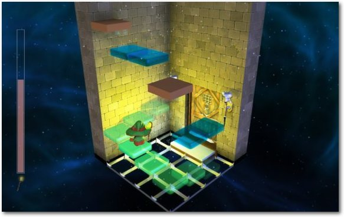

Zur Version ohne Bilder
In Lumo hüpft und springt man als kleiner Zauberer durch verschiedene Räume, um Rätsel zu lösen, knifflige Sprungpassagen zu meistern und um das ein oder andere Geheimnis zu lüften. Ende Mai erschien das Spiel und hat sich auf die Fahnen geschrieben, das isometrische Adventure zurückzubringen. Wird Lumo dem Anspruch gerecht? Der Artikel soll diese Frage beantworten. (weiterlesen)
Das letzte Humble Bundle für PC und Android von Anfang Juli hielt auch zahlreiche DRM-freie Spiele für Linux bereit. Der Artikel soll die zehn Spiele kurz vorstellen, die auch nach der Humble-Aktion noch im Humble Store oder bei Steam gekauft werden können. (weiterlesen)
Zum Inhaltsverzeichnis
Fedora 24
Der Juli im Kernelrückblick
Software
Lumo – Comeback eines Genres?
Kurzvorstellung: Humble PC & Android Bundle 14
Community
Alphabetischen Index für freiesMagazin-Artikel erstellen
Rezension: Kryptografie: Verfahren, Protokolle, Infrastrukturen
Rezension: C++ für Spieleprogrammierer
Rezension: Python programmieren lernen für Dummies
Magazin
Leserbriefe
Veranstaltungen
Vorschau
Konventionen
Impressum
Zum Inhaltsverzeichnis
Ein Kuchen für den Systemadministrator (Wikimedia).
© Derphilipp (CC-BY-SA-3.0)
Auch wir bei freiesMagazin haben im Hintergrund ein Team, welches sich darum kümmert, dass der Server und die Webseite läuft und die einzelnen Teammitglieder Zugriff auf das Repositorium des Magazins haben, so dass wir jeden Monat, so wie auch jetzt, eine neue Ausgabe veröffentlichen können. An dieser Stelle möchten wir uns ganz herzlich dafür bedanken. Und da es manchmal einfach schwer fällt, ein Thema für das Editorial zu finden, soll es damit an dieser Stelle auch mal gut sein. Es ist Sommer und wir wünschen den Lesern, dass sie diesen auch genießen können. Und nun wünschen wir Ihnen viel Spaß mit der neuen Ausgabe. Ihre freiesMagazin-Redaktion Links
[1] http://sysadminday.com/
[2] https://de.wikipedia.org/wiki/System_Administrator_Appreciation_Day
[3] https://de.wikipedia.org/wiki/Tag_des_Programmierers
Beitrag teilen Beitrag kommentieren
Zum Inhaltsverzeichnis
Benutzereinstellungen bei der Installation.
Was sich für den Testfall so einfach anhört, kann in der Praxis ziemlich unangenehm werden. Seit der Neuimplementierung, deren Sinn sich einfach nicht erschließt, ist der Installer Anaconda eines der nervtötendsten und unlogischsten Installer, die es gibt. Von intuitiver Bedienung kann keine Rede sein; oft erreicht man das Gewünschte erst nach mehrfachem Probieren. Man versuche als Beispiel einmal, eine bereits partitionierte Festplatte als Installationsziel anzugeben und festzulegen, dass Fedora die gesamte Platte überschreiben soll.
Einrichtung der Online-Konten nach dem ersten Start.
GNOME 3.20 bringt zahlreiche Verbesserungen gegenüber GNOME 3.18. So verfügt Nautilus nun über eine verbesserte Suchfunktion, die es erlaubt, Suchanfragen präzise zu formulieren und zeitlich einzugrenzen. Maps kann interessante Orte anzeigen, Einträge in OpenStreetMap anlegen und ändern. Zudem kann Maps nun interessante Punkte anzeigen und nähere Informationen dazu liefern. Der Dropdown-Kalender kann jetzt neben Benachrichtigungen auch Steuerelemente für Medienplayer anzeigen. Dabei nutzt es den MPRIS-Standard. Die Bildverwaltung Photos beherrscht nun nichtdestruktives Editieren von Bildern und kann Bilder exportieren. Unter der Bezeichnung „Shortcuts“ sollen GNOME-Anwendungen eine Anzeige der jeweils möglichen Tastenkombinationen und Multitouch-Gesten einblenden, wenn man „Strg“ + „?“ oder „Strg“ + „F1“ drückt. Dieses Verhalten funktionierte im Test jedoch nicht. Aktualisierte Anwendungen sind neben vielen anderen Firefox 45, Thunderbird 38.7.1, LibreOffice 5.1, Evolution 3.19.91, TeX Live 2015, NetworkManager 1.2 und Darktable 2.0. Das neu aufgenommene QGnomePlatform sorgt dafür, dass Qt-Anwendungen den GNOME-Anwendungen so ähnlich sehen wie möglich.
GNOME Classic.
Der Standard-Webbrowser unter GNOME ist Firefox 45. Außer drei Plug-ins sind keine Erweiterungen vorinstalliert. Dabei handelt es sich um die GNOME-Shell-Integration, den iTunes Application Detector und das OpenH264-Plugin für Web-Videokonferenzen. Letzteres ist standardmäßig deaktiviert. Trotz der offenkundigen Verbesserungen gibt es auch Probleme in GNOME. Die Scrollbalken sind nicht besser geworden. In manchen Anwendungen wie LibreOffice sind sie kaum zu sehen. Einige Anwendungen sind trotz der Sprachauswahl während der Installation nicht internationalisiert. So erscheint Firefox in Deutsch, LibreOffice dagegen nicht. Der Speicherbedarf liegt nach dem Start bei atemberaubenden 750 MB. Mit ein Grund dafür sind einige Hintergrundprogramme, beispielsweise der Packagekit-Daemon, der allein über 60 MB benötigt, und nach einem Aufruf der Paketverwaltung noch viel mehr. Nach der Integration von Systemd gibt es allerdings keinen Grund mehr, selten genutzte Daemonen dauerhaft laufen zu lassen. Auch Komponenten des E-Mail- und Kalender-Clients Evolution benötigen enorm viel RAM, obwohl sie anfänglich sicher gar nicht benötigt werden. Zudem sieht es auch noch so aus, als wären Teile der GNOME-Sitzung doppelt gestartet worden. Es gibt zwei Prozesse der GNOME-Shell, Teile von Evolution laufen zweimal mit anscheinend identischen Parametern. Das alles könnte daher kommen, dass eine Wayland-Sitzung im Hintergrund läuft, womöglich für den Login-Bildschirm. Die GNOME-Shell hat weiterhin das Problem, eine Hardware-3-D-Beschleunigung zu verlangen, um optimal zu laufen. Andernfalls muss sie auf ein Software-Rendering zurückgreifen, das zwar auf jeder Hardware läuft, aber gerade noch als benutzbar gelten kann. Videos beispielsweise verzögerungsfrei abzuspielen, ist auf diese Weise schwer. Bedauerlich ist auch, dass das „gnome-tweak-tool“, auf Deutsch „Optimierungswerkzeug“ genannt, weiterhin nicht standardmäßig installiert ist. Denn man benötigt es, um Erweiterungen für die GNOME-Shell zu installieren, da dafür keine Möglichkeit in der Standardkonfiguration vorhanden ist. Daneben kann man auch andere Dinge einstellen, die die GNOME-Entwickler nicht in der GUI konfigurierbar gemacht haben.
Suche in der GNOME-Shell.
GNOME unter Wayland.
Plasma mit Jump List.
Bei den Anwendungen [8] gibt es unter anderem das neue Lern- und Übungsprogramm Minuet zu vermelden, ansonsten dominieren kleine Verbesserungen und Korrekturen. Das voreingestellte Design von Plasma 5 wird nicht unbedingt jedem gefallen, aber das macht nichts, da man leicht ein anderes auswählen kann. Zudem wissen alle KDE-Fans, dass man weitere Designs und andere Komponenten bequem über das Internet nachladen kann. Fast alles an Plasma ist konfigurierbar und die Bedienung ist weitgehend so, wie man sie von Desktops seit 25 Jahren gewohnt ist. Zum Glück sind bei KDE noch keine Visionäre ans Ruder gekommen, die glauben, dass man die Bedienung komplett „optimieren“ könnte, was dann zu Hirngespinsten führt, die man mühsam wieder wegkonfigurieren muss – wie bei GNOME. Insgesamt machte KDE einen etwas trägen Eindruck, das Starten von Programmen war immer einen Moment verzögert. Das muss einen nicht unbedingt wundern bei diesem Speicherbedarf, der ungefähr beim Vierfachen von Xfce oder LXDE liegt. Inwiefern auch die virtuelle Maschine dazu beitrug, ist schwer einzuschätzen, aber sie hatte auf jeden Fall genug RAM. Auch unter KDE ist Firefox als Webbrowser der Standard. Konqueror und Qupzilla sind als zusätzliche Browser vorhanden. Dabei macht Qupzilla erst einmal einen guten Eindruck, allerdings bietet es nur eine begrenzte Zahl von Erweiterungen und es ist unklar, ob weitere existieren. Der Adblocker Adblock Plus ist keine Erweiterung, sondern eingebaut, was es unmöglich macht, zu einer anderen Lösung zu wechseln. Qupzilla hat allerdings ein massives Speicherproblem, das es für jeden ernsthaften Einsatz unbrauchbar macht. Öffnet man zusätzliche Tabs, so verschlingt jeder Tab um die 100 MB Speicher, noch bevor eine Webseite darin aufgerufen wird. Schnell kommt man an die Grenze, an der andere Anwendungen oder der ganze Rechner zu wenig RAM haben. Weiterhin ist Calligra, jetzt Version 2.9.11, statt LibreOffice als Office-Suite installiert. Einige Testdokumente, wahlweise in einem alten Word-Format oder OpenDocument, konnte es öffnen, wobei die Darstellung nicht immer so war wie im Originaldokument. Doch in diesem Artikel geht es nicht um einen Test von Calligra. Vorinstalliert sind des Weiteren nur die wichtigsten KDE-Anwendungen. Selbst populärere, aber größere KDE-Programme wie Marble, Digikam oder KStars sind nicht standardmäßig vorhanden, können aber natürlich installiert werden.
Calligra mit großem Word-Dokument.
Der KDE-Spin nutzt wie schon vor einem Jahr Journald von Systemd für das Loggen, installiert und startet aber weiterhin auch rsyslog, so dass das Log immer noch in Stereo vorhanden ist.
Die Paketverwaltung Apper mit Gruppen.
Die gesamte Paketverwaltung baut unter GNOME und KDE grundsätzlich auf PackageKit auf. Sie funktioniert normalerweise reibungslos und die Updates, wenn sie auch zahlreich sind, sind dank Delta-RPMs oft erstaunlich klein und schnell installiert. Neu verfügbare Updates werden im Benachrichtigungsbereich angezeigt.
[1] http://www.pro-linux.de/artikel/2/1837/fedora-24.html
[2] https://fedoramagazine.org/whats-new-fedora-24-workstation/
[3] https://spins.fedoraproject.org/
[4] https://www.microbit.co.uk/
[5] https://docs.fedoraproject.org/en-US/Fedora/24/html/Release_Notes/index.html
[6] http://getfedora.org/
[7] http://flatpak.org/
[8] http://www.pro-linux.de/news/1/23485/kde-applications-16040.html
[9] http://rpmfusion.org/
[10] https://wiki.debian.org/PepperFlashPlayer
[11] http://0install.net/
Beitrag teilen Beitrag kommentieren
Zum Inhaltsverzeichnis
[1] https://lkml.org/lkml/2016/7/4/40
[2] https://lkml.org/lkml/2016/7/10/219
[3] https://de.wikipedia.org/wiki/InfiniBand
[4] https://lkml.org/lkml/2016/7/24/151
[5] https://de.wikipedia.org/wiki/System_i
[6] https://de.wikipedia.org/wiki/System_p
[7] https://de.wikipedia.org/wiki/AMD-Radeon-400-Serie
[8] https://de.wikipedia.org/wiki/Unified_Extensible_Firmware_Interface
[9] https://usbip.sourceforge.net/
[10] https://de.wikipedia.org/wiki/Semaphor_(Informatik)
[11] https://de.wikipedia.org/wiki/Prozess-Scheduler
[12] https://de.wikipedia.org/wiki/Google_Chrome_OS
[13] https://kernelnewbies.org/Linux_4.7
[14] https://lkml.org/lkml/2016/8/1/492
Beitrag teilen Beitrag kommentieren
Zum Inhaltsverzeichnis
Lumo – Comeback des isometrischen Genres.
Die Aufgabe des Magiers besteht darin, von Raum zu Raum zu ziehen und sich der dortigen Fallen zu erwehren. Dabei erwirbt er im Laufe des Spiels verschiedene Fähigkeiten, um immer neue Denkaufgaben zu meistern und sich sogar mit ein paar Gegnern auseinanderzusetzen. Die Rätsel beschränken sich dabei größtenteils auf die Nutzung von Schaltern und das Herumschieben von Kisten, um bestimmte Mechaniken auszulösen. Oft sind diese sogar raumübergreifend. Man legt in einem Raum einen Hebel um und in einem anderen öffnet sich eine zuvor verschlossene Tür. Oder der Wasserspiegel wird gesenkt und gibt zuvor versperrte Areale frei, die man bisher aufgrund des Wasserstands nicht betreten konnte. Dazu kommen Hüpfeinlagen, die mal mehr und mal weniger Geschick erfordern. Man springt über Plattformen, Abgründe, stachelbesetzte Hindernisse und Fallen, balanciert auf dünnen Pfaden oder rotierenden Säulen, muss mit begrenztem Atem tauchen und sogar eine kurze Slalom-Skipassage meistern. Die Neufassung des EGX Build-Trailers von 2015 [3] zeigt in knapp zwei Minuten sehr gut, worauf man sich einstellen kann. Der Trailer wurde vom Entwickler kürzlich nochmals neu überarbeitet und um ein paar wenige Szenen erweitert. Aber erst einmal der Reihe nach.
Screenshot einer Szene mit Quietschente.
Auch die Orientierung der Steuerung kann angepasst werden. Es gibt ein klassisches Muster, bei dem der Charakter nach hinten links läuft, wenn man nach oben drückt und nach unten rechts, wenn man die Taste für «unten» betätigt. Links und rechts lassen die Spielfigur dann nach unten links bzw. oben rechts laufen. Das macht irgendwie keinen Sinn? Nun, bei den isometrischen Adventures von damals war das so. Vereinfacht erklärt wurde das Bild in der Draufsicht um 45° gedreht während alle drei Richtungen gleichmäßig verkürzt wurden. Dadurch wurde versucht, eine dreidimensionale Welt in einer flachen Umgebung zu simulieren. Die Eingaben mussten dann etwas anders interpretiert werden, da teilweise nur vier Richtungen für die Steuerung zur Verfügung standen. Das beschriebene Bewegungsschema gibt es auch noch umgekehrt, also oben für oben rechts, unten für unten links, links für oben links und rechts für unten rechts. Oder man entscheidet sich für eine zeitgemäßere Art der Steuerung und nimmt die dritte Option, mit der der Spieler einfach in die jeweils gedrückte Richtung geht – ganz so, wie man es heutzutage am ehesten gewohnt ist. In jedem Fall hat man die Möglichkeit, die Auswahl gleich in einem kleinen Trainingsraum zu testen und gegebenenfalls zu wechseln, bevor man das eigentliche Spiel startet. Gesteuert wird Lumo standardmäßig entweder mit der Tastatur mittels der WASD-Tasten oder mit einem Gamepad. Dabei kann man selbst während des Spiels von der einen zur anderen Steuerungsmethode wechseln. Auch die Tasten lassen sich im Menü neu belegen. Apropos Menü. Startet man dann das Spiel, so wird man als der gewählte Charakter im Freien vor einem Gebäude abgesetzt und das Menü lässt sich vorerst nicht mehr aufrufen. Nachdem man das Gebäude betreten hat, findet man sich auf einer Retro-Veranstaltung wieder, die an einen in der Schule geplanten Themennachmittag erinnert. Im hinteren Bereich entdeckt man einen Computer mit scheinbar defekten Komponenten. Man schaut sich den Rechner an, es blitzt und der Computer saugt den Spieler ein. Man findet sich in einer anderen Welt wieder, als kleiner Zauberer mit übergroßem Hut.
RGB-Fackeln.
Sich bewegende Plattformen.
Auch ist es jetzt möglich, die kleinen Quietscheentchen einzusammeln, die schon im einen oder anderen Raum auf dem Wasser schwammen. Von denen sind 32 im Spiel verteilt. Da das Wasser zu Beginn des Spiels zu tief ist, giftig oder verunreinigt zu sein scheint, endete ein bisheriger Versuch jedes Mal mit einem Zurücksetzen zu dem zuletzt genutzten Eingang. Dies ist die Strafe, sollte man das Zeitliche segnen. Hat man sich für den Old-School-Modus entschieden, muss man zusätzlich auf die Anzahl seiner noch verbleibenden Leben achten. Sind diese aufgebraucht, heißt es Game Over und man muss von vorne beginnen. Im Gegensatz zum Adventure-Modus ist auch das Speichern des Fortschritts nicht möglich. Man muss das gesamte Spiel in einer Sitzung meistern – eben ganz so wie früher.
Versteckte Plattformen.
Natürlich ergeben sich dadurch in manchen Räumen auch ganz neue Wege, die dann zu Geheimnissen oder Abkürzungen führen. Sollte sich z. B. die Möglichkeit bieten, über die Wände hinauszuspringen, kann man davon ausgehen, dass sich dahinter ein Versteck befindet, welches nicht auf der Karte verzeichnet ist. Um diese Orte zu erreichen, benötigt man nicht immer zwingend versteckte Plattformen. Eine Karte gibt es übrigens in jedem Level zu finden. Zumindest, wenn man im normalen Arcade-Modus spielt. Diese zeigt uns allerdings nicht, wo man sich gerade befindet. Es gibt ein paar Markierungen, nach denen man sich richten kann, z. B. für den Raum, in dem sich die jeweilige Karte befand. Es ist also Mitdenken angesagt und ein wenig Orientierungssinn gefordert. Im Old-School-Modus werden die Karten durch Extraleben ersetzt.
Zauberer balanciert auf einer Kugel.
Finde den Zauberer.
Pacman-Level.
Lumo bietet mit seinen über 400 Räumen bei normalem Tempo zwischen fünf und acht Stunden Spielzeit, je nach Können und Geschick. Hat man das Spiel dann beendet, gibt es noch mehr zu entdecken. Neben der besonderen Herausforderung des Old-School-Modus finden sich Abkürzungen, die besonders für Speedruns interessant sind. Außer den Enten gibt es noch Kassetten zum Sammeln. Diese befinden sich hauptsächlich in geheimen Räumen. Zudem sind in der Welt von Lumo Münzen verteilt. Mit zehn Münzen bekommt man Zutritt zu besagten sechs Extraleveln. Diese Zugänge müssen aber erst gefunden werden. Dadurch wird der Wiederspielwert erhöht und besonders Komplettisten bekommen einiges zu tun. Das bezieht sich auch auf die Achievements. Da sind nämlich ein paar dabei, die an bestimmten Stellen im Spiel nur einen Versuch erlauben, um die Auszeichnung zu erhalten. Gelingt dies nicht, heißt es von vorne beginnen. Da das Spiel besonders durch den Old-School Modus und die Abkürzungen zu Speedruns einlädt, wird man besagte Stellen aber mit ein wenig Übung bald recht zügig erreichen. Mit ausreichend Können und Kenntnis ist das Ende nämlich auch schon nach ungefähr einer Stunde zu erreichen [4]. Aber zurück zu den Extralevels. Diese stellen eine Hommage an Spieleklassiker von früher dar. So gibt es einen Abschnitt, der ohne Zweifel von Marble Madness inspiriert wurde, ein anderer von Nebulus [5]. Beendet man diese Level erfolgreich, bekommt man einen Buchstaben. Hat man alle gesammelt, ergibt sich das Wort Extend. Wer jetzt an zwei niedliche kleine Drachen [6] denkt, liegt damit goldrichtig. Ansonsten findet man selbst Anspielungen zu Pac-Man (siehe oben) und eine Fahrt durch eine Mine mit einer Lore, die ein wenig an zwei gewisse Affen und ihren damaligen Auftritt auf dem Super Nintendo erinnert. Der Entwickler bestätigt aber selbst, dass er bei dieser Passage ein weiteres Mal von den Indiana Jones Filmen inspiriert wurde. Zumindest einer der beiden Affen, nämlich Donkey Kong, wird aber in einem Abschnitt mit rollenden Fässern über schiefe Ebenen gewürdigt – ganz so wie im gleichnamigen Original. Auch ein bekanntes Element aus „Zelda 3 – A Link to the Past“ findet Verwendung (Stichwort: fliegende Bodenplatten). Auch sonst werden Kenner der Videospielgeschichte im Verlauf des Spiels oft denken „Das kenn’ ich doch…“.
Rollende Fässer – Donkey Kong lässt grüßen.
Zauberer in der Lore.
Leuchtende Statue.
[1] http://play-lumo.com/
[2] https://games4linux.de/test-lumo-comeback-eines-genres/
[3] https://www.youtube.com/watch?v=dFXjc7VbnSY
[4] https://www.youtube.com/watch?v=fAZTpb3IHT8
[5] https://de.wikipedia.org/wiki/Nebulus
[6] https://www.youtube.com/watch?v=Aghyia_9XbU
[7] http://steamcommunity.com/app/345480/discussions/0/364042262876614400/
[8] http://www.mobygames.com/game/head-over-heels
[9] http://retrospec.sgn.net/games/hoh/
[10] http://retrospec.sgn.net/game-links.php?link=hoh
[11] http://store.steampowered.com/app/378410/?snr=1_7_15__13
[12] http://steamcommunity.com/games/378410/announcements/detail/101680110149761002
[13] http://harebrained-schemes.com/shadowrun/
[14] http://harebrained-schemes.com/
[15] http://play-lumo.com/dir-comm/
[16] http://store.steampowered.com/app/345480/
[17] https://www.gog.com/game/lumo
[18] https://www.humblebundle.com/store/lumo
[19] http://dopedemandit.bandcamp.com/album/lumo-the-videogame-ost
Beitrag teilen Beitrag kommentieren
Zum Inhaltsverzeichnis
10 000 000.
Das Spielprinzip ist dabei nicht völlig neu. Bereits das sehr gute „Puzzle Quest“ [6], was grafisch besser aussieht und auch eine gute Story hat, setzte auf eine Verknüpfung von Rollenspiel und Bejeweled. Leider ist das Spiel nicht für Linux erhältlich gewesen.
BADLAND.
SPACECOM.
Please Don't Touch Anything.
Spider: Rites of the Shrouded Moon.

You Must Build a Boat.
Knights of Pen & Paper +1 Edition.
Im Humble Bundle vorhanden war auch der zweite Teil „Knights of Pen & Paper 2“ [13]. Ohne Steam war dieses Spiel aber leider nicht zum Starten zu bewegen.
Asdivine Hearts.
Unmechanical.
Desktop Dungeons.
[1] https://www.humblebundle.com/
[2] https://www.humblebundle.com/store
[3] http://store.steampowered.com/
[4] http://eightyeightgames.com/100000000-2/
[5] https://de.wikipedia.org/wiki/Bejeweled
[6] https://en.wikipedia.org/wiki/Puzzle_Quest %3A_Challenge_of_the_Warlords
[7] http://frogmindgames.com/badland-game-of-the-year-edition/
[8] http://spacecom-game.com/
[9] http://www.bulkypix.com/
[10] http://www.tigerstylegames.com/
[11] http://eightyeightgames.com/you-must-build-a-boat/
[12] https://www.paradoxplaza.com/knights-of-pen-paper-1-edition
[13] https://www.paradoxplaza.com/knights-of-pen-paper-2-deluxiest-edition
[14] http://www.kemco.jp/sp/games/ashe/en/index.html
[15] http://unmechanical.net/
[16] http://www.desktopdungeons.net/
Beitrag teilen Beitrag kommentieren
Zum Inhaltsverzeichnis
[1] http://www.freiesmagazin.de/ftp/2015/freiesMagazin-2015-Index.pdf
[2] http://www.freiesmagazin.de/archiv
[3] http://www.freiesmagazin.de/freiesmagazin.xml
[4] http://lxml.de
[5] http://www.freiesmagazin.de/freiesMagazin-2016-05/
[6] https://www.w3.org/TR/xslt
[7] http://xmlsoft.org/XSLT/xsltproc2.html
[8] https://www.w3.org/html/
[9] http://www.webmeister.at/Style/CSS/
[10] https://www.w3.org/Style/CSS/
[11] https://www.w3.org/XML/
[12] http://docs.oasis-open.org/office/v1.2/os/OpenDocument-v1.2-os.html
[13] https://www.w3.org/Graphics/SVG/
[14] https://www.w3.org/XML/Schema
[15] http://www.freiesmagazin.de/freiesmagazinapi.xsd
[16] http://www.saxonica.com/welcome/welcome.xml
[17] https://sourceforge.net/projects/saxon/
[18] https://www.mozilla.org/en-US/MPL/2.0/
[19] http://www.w3schools.com/xsl/xsl_functions.asp
[20] https://www.w3.org/TR/1999/REC-xslt-19991116#key
[21] http://www.freiesmagazin.de/freiesMagazin-2011-04-02
[22] http://www.w3schools.com/xsl/xsl_choose.asp
[23] http://www.ghostscript.com/
Beitrag teilen Beitrag kommentieren
Zum Inhaltsverzeichnis
Links
[1] https://www.dpunkt.de/buecher/4423/-kryptografie-10380.html
Beitrag teilen Beitrag kommentieren
Zum Inhaltsverzeichnis
Links
[1] http://www.hanser-fachbuch.de/buch/C+fuer+Spieleprogrammierer/9783446446441
Beitrag teilen Beitrag kommentieren
Zum Inhaltsverzeichnis
 geschickt werden. Die Kommentare werden bis zum Ende der
Verlosung nicht freigeschaltet. Das Buch wird unter allen
Einsendern, die die Frage richtig beantworten konnten, verlost.
geschickt werden. Die Kommentare werden bis zum Ende der
Verlosung nicht freigeschaltet. Das Buch wird unter allen
Einsendern, die die Frage richtig beantworten konnten, verlost.
Links
[1] http://www.wiley-vch.de/publish/dt/books/ISBN3-527-71148-1/?sID=s1v1t0n0imp87tr8pn94kmp8a7
Beitrag teilen Beitrag kommentieren
Zum Inhaltsverzeichnis
zur Verfügung - wir freuen uns über Lob,
Kritik und Anregungen zum Magazin.
An dieser Stelle möchten wir alle Leser ausdrücklich ermuntern,
uns auch zu schreiben, was nicht so gut gefällt. Wir bekommen
sehr viel Lob (was uns natürlich freut), aber vor allem durch
Kritik und neue Ideen können wir uns verbessern.
Jaki143 (Kommentar) -> Tomb Raider mit einer Gf 610 kannst Du vergessen, selbst auf einer Gf 640 wird es absolut keinen Spaß machen. Ob es eine Demo von dem Spiel gibt weiß ich nicht, aber vielleicht gibt es bei Steam einen Probezeitraum, in dem man von der Miete des Spiels zurücktreten kann. Wenn Du unbedingt Tomb Raider spielen willst, würde ich mir die alten Teile besorgen.
Stephan (Kommentar) Die Redaktion behält sich vor, Leserbriefe gegebenenfalls zu kürzen. Redaktionelle Ergänzungen finden sich in eckigen Klammern. Beitrag teilen Beitrag kommentieren
Zum Inhaltsverzeichnis
(Alle Angaben ohne Gewähr!)
Sie kennen eine Linux-Messe, welche noch nicht auf der Liste zu
finden ist? Dann schreiben Sie eine E-Mail mit den Informationen zu
Datum und Ort an .
Zum Inhaltsverzeichnis
Zum Inhaltsverzeichnis
Erscheinungsdatum: 7. August 2016
Dieses Magazin wurde mit LaTeX erstellt. Mit vollem Namen
gekennzeichnete Beiträge geben nicht notwendigerweise die Meinung
der Redaktion wieder. Wenn Sie freiesMagazin ausdrucken möchten, dann
denken Sie bitte an die Umwelt und drucken Sie nur im Notfall. Die
Bäume werden es Ihnen danken. ;-)
Soweit nicht anders angegeben, stehen alle Artikel, Beiträge und Bilder in freiesMagazin unter der Creative-Commons-Lizenz CC-BY-SA 4.0 International. Das Copyright liegt beim jeweiligen Autor. Die Kommentar- und Empfehlen-Icons wurden von Maren Hachmann erstellt und unterliegen ebenfalls der Creative-Commons-Lizenz CC-BY-SA 4.0 International. freiesMagazin unterliegt als Gesamtwerk der Creative-Commons-Lizenz CC-BY-SA 4.0 Unported mit Ausnahme der Inhalte, die unter einer anderen Lizenz hierin veröffentlicht werden. Das Copyright liegt bei Dominik Wagenführ. Es wird erlaubt, das Werk/die Werke unter den Bestimmungen der Creative-Commons-Lizenz zu kopieren, zu verteilen und/oder zu modifizieren. Die xkcd-Comics stehen separat unter der Creative-Commons-Lizenz CC-BY-NC 2.5 Generic. Das Copyright liegt bei Randall Munroe.
File translated from TEX by TTH, version 4.08.
On 7 Aug 2016, 13:38.
freiesMagazin August 2016
(ISSN 1867-7991)Themen dieser Ausgabe sind u. a.
Entsprechend des halbjährlichen Veröffentlichungszyklus ist kürzlich Fedora 24 erschienen. In diesem Artikel sollen die Neuerungen der aktuellen Ausgabe erkundet werden. Vor allem die Unterstützung von Anwendungen als Flatpack-Pakete und die Möglichkeit, Wayland statt X.org zu verwenden, stechen bei den Features hervor. (weiterlesen)In Lumo hüpft und springt man als kleiner Zauberer durch verschiedene Räume, um Rätsel zu lösen, knifflige Sprungpassagen zu meistern und um das ein oder andere Geheimnis zu lüften. Ende Mai erschien das Spiel und hat sich auf die Fahnen geschrieben, das isometrische Adventure zurückzubringen. Wird Lumo dem Anspruch gerecht? Der Artikel soll diese Frage beantworten. (weiterlesen)
Das letzte Humble Bundle für PC und Android von Anfang Juli hielt auch zahlreiche DRM-freie Spiele für Linux bereit. Der Artikel soll die zehn Spiele kurz vorstellen, die auch nach der Humble-Aktion noch im Humble Store oder bei Steam gekauft werden können. (weiterlesen)
Zum Inhaltsverzeichnis
Inhalt
Linux allgemeinFedora 24
Der Juli im Kernelrückblick
Software
Lumo – Comeback eines Genres?
Kurzvorstellung: Humble PC & Android Bundle 14
Community
Alphabetischen Index für freiesMagazin-Artikel erstellen
Rezension: Kryptografie: Verfahren, Protokolle, Infrastrukturen
Rezension: C++ für Spieleprogrammierer
Rezension: Python programmieren lernen für Dummies
Magazin
Leserbriefe
Veranstaltungen
Vorschau
Konventionen
Impressum
Zum Inhaltsverzeichnis
Editorial
Ein Tag um den Systemadministratoren zu danken
Am 29. Juli 2016 war der 17. „System Administrator Appriciation Day“ [1] [2], nicht zu verwechseln mit dem „Tag des Programmierers“ [3]. Er wurde von einem amerikanischen Systemadministrator ins Leben gerufen, um die Menschen daran zu erinnern, auch denen zu danken, mit denen man oft nur dann in Kontakt kommt, wenn etwas nicht funktioniert.Ein Kuchen für den Systemadministrator (Wikimedia).
© Derphilipp (CC-BY-SA-3.0)
{kind=link}
Auch wir bei freiesMagazin haben im Hintergrund ein Team, welches sich darum kümmert, dass der Server und die Webseite läuft und die einzelnen Teammitglieder Zugriff auf das Repositorium des Magazins haben, so dass wir jeden Monat, so wie auch jetzt, eine neue Ausgabe veröffentlichen können. An dieser Stelle möchten wir uns ganz herzlich dafür bedanken. Und da es manchmal einfach schwer fällt, ein Thema für das Editorial zu finden, soll es damit an dieser Stelle auch mal gut sein. Es ist Sommer und wir wünschen den Lesern, dass sie diesen auch genießen können. Und nun wünschen wir Ihnen viel Spaß mit der neuen Ausgabe. Ihre freiesMagazin-Redaktion Links
[1] http://sysadminday.com/
[2] https://de.wikipedia.org/wiki/System_Administrator_Appreciation_Day
[3] https://de.wikipedia.org/wiki/Tag_des_Programmierers
Beitrag teilen Beitrag kommentieren
Zum Inhaltsverzeichnis
Fedora 24
von Hans-Joachim Baader Entsprechend des halbjährlichen Veröffentlichungszyklus ist kürzlich Fedora 24 erschienen. In diesem Artikel sollen die Neuerungen der aktuellen Ausgabe erkundet werden. Vor allem die Unterstützung von Anwendungen als Flatpack-Pakete und die Möglichkeit, Wayland statt X.org zu verwenden, stechen bei den Features hervor. Redaktioneller Hinweis: Der Artikel „Fedora 24“ erschien zuvor bei Pro-Linux [1].Überblick
Wie immer ist Fedora 24 in den Varianten Desktop/Workstation, Server und Cloud erhältlich. Darüber hinaus gibt es Varianten, Spins genannt, die von der Gemeinschaft gepflegt werden. Sie alle haben jedoch dieselbe Basis und benutzen das selbe Paketrepository. Fedora 24 Workstation [2] nutzt wie immer GNOME als Desktopumgebung, jetzt in Version 3.20. GNOME ist damit die Standard-Desktopumgebung von Fedora, andere Desktops sind vorinstalliert in Form von Spins erhältlich. Diese Spins von Fedora 24 [3] gibt es unter anderem für andere Desktopumgebungen (KDE Plasma, Xfce, LXDE, Mate-Compiz und Cinnamon). Unter der Bezeichnung „Fedora Labs“ gibt es ferner Software-Zusammenstellungen für spezifische Zwecke wie Spiele, Robotersteuerungen und einiges mehr. Neu hinzugekommen ist die Astronomie-Zusammenstellung. Alle Labs stehen als Live-ISO-Images zum Download zur Verfügung. Die Server-Variante von Fedora 24 ist nach Angaben des Teams stärker modularisiert. Einige unnötige Pakete wurden aus der Standardinstallation entfernt. Die wohl wichtigste Aktualisierung ist FreeIPA 4.3, das in der neuen Version die Installation von replizierten Servern vereinfacht und die Replikation verbessert. Fedora 24 Cloud ist eine andere Server-Variante, die für das Ausführen von Containern optimiert wurde. OpenShift Origin ist als Orchestrierungswerkzeug für die Container verfügbar. Neu ist eine Infrastruktur, um Docker-Images einzusetzen, die auf dem Basis-Docker-Image von Fedora beruhen. Diese ist noch nicht in Fedora 24 enthalten, aber als Zusatz verfügbar. Fedora 24 beruht auf dem Linux-Kernel in der Version 4.5. Weitere Aktualisierungen sind Mono 4.2, PHP 5.6.22, Python 3.5, das jetzt standardmäßig anstelle von Python 2.7 dient, Ruby 2.3, Node.js 5.10, Go 1.6 und Erlang 18. Alle Pakete wurden mit GCC 6.1 generiert. glibc wurde nicht nur auf Version 2.23 aktualisiert, sondern die Übersetzungen der Meldungen in der C-Laufzeitbibliothek wurden auch in separate Pakete aufgeteilt. Dadurch können bis zu 100 MB Speicherplatz gespart werden. Speziell für die britischen Schüler, die alle mit einem BBC MicroBit-Rechner [4] ausgestattet wurden, wurden der Python-Editor Mu zum Schreiben von Code für den MicroBit und das Flash-Werkzeug uFlash aufgenommen. Weitere Informationen liefern die Anmerkungen zur Veröffentlichung [5]. Die Abbilder der Installationsmedien für Fedora 24 sind zum Download [6] in allen Varianten auf den Servern zu finden. Bei den Cloud Images gibt es Varianten für OpenStack, allgemeine virtuelle Maschinen, Vagrant und Amazon EC2. Aus Zeitgründen beschränkt sich dieser Artikel im folgenden auf Fedora Workstation (GNOME) und den KDE-Spin. Dafür wurden zwei identische virtuelle Maschinen, 64 Bit, unter KVM mit jeweils 2 GB RAM frisch aufgesetzt.Installation
Fedora Workstation kann von Live-Images (für DVD oder USB-Stick) oder minimalen Bootmedien installiert werden. Für Installation werden jetzt mindestens 1 GB RAM empfohlen. Wahrscheinlich funktioniert sie aber auch mit 768 MB noch. Mit weniger als 768 MB ist die Installation noch mit Einschränkungen möglich. Für den Betrieb werden mehr als 1 GB empfohlen. Die Installation selbst hat sich gegenüber Fedora 23 kaum geändert und kann daher kurz abgehandelt werden. Sie beginnt mit der Sprachauswahl, bei der interessanterweise Deutsch als Voreinstellung angeboten wird. Wahrscheinlich bezieht der Installer diese Vorauswahl über GeoIP, da sie nur bei bestehender Netzwerkverbindung zu funktionieren scheint. Das wurde aber nicht genauer untersucht. Danach gelangt man zur Übersichtsseite. Hier ermittelt das Installationsprogramm im Hintergrund bereits einige Dinge, es steht einem aber frei, diese abzuändern, und zwar weitgehend in beliebiger Reihenfolge. Alle Punkte, die vom Benutzer zwingend noch bearbeitet werden müssen, sind mit einem gelben „Warndreieck“ markiert. Zu beachten ist aber, dass der Installer manchmal einen Moment braucht, um die Anzeige neu zu berechnen. Die einzige zwingende Aktion ist die Auswahl des Installationsziels. Die erkannten Festplatten werden durch ein Icon angezeigt. Zu empfehlen ist noch die Auswahl der Tastaturbelegung. Hinter diesem Icon stehen alle Optionen zur Verfügung, einschließlich ungewöhnlicher Belegungen und Feineinstellungen. Auch die Software-Auswahl (auf den DVDs nicht möglich) sollte man sich noch ansehen, wenn man nicht GNOME, sondern eine andere Oberfläche installieren will. Bei der Partitionierung sind die gewohnten Optionen wie die Verschlüsselung der gesamten Festplatte oder einzelner Partitionen, RAID und LVM vorhanden. Auch das Dateisystem Btrfs wird unterstützt, einschließlich seiner spezifischen Funktionen wie Subvolumes. Btrfs ist eine der möglichen Optionen, wenn man die automatische Partitionierung wählt. Außer Btrfs sind auch „normale“ Partitionen und eine LVM-Installation möglich, letztere ist die Standardeinstellung. LVM- und Btrfs-Installation legen eine 500 MB große /boot-Partition mit dem Dateisystem ext4 an. Bei LVM wird der Rest als Root-Partition verwendet, mit Btrfs wird eine separate /home-Partition angelegt, die sich aber aufgrund der besonderen Eigenschaften von Btrfs den Plattenplatz mit der Root-Partition teilt. Im Endeffekt ist diese Lösung noch flexibler als LVM. Während die Installation dann im Hintergrund läuft, muss man das Root-Passwort setzen und kann optional auch Benutzer anlegen. Nach der Installation ist ein Neustart erforderlich.Benutzereinstellungen bei der Installation.
Was sich für den Testfall so einfach anhört, kann in der Praxis ziemlich unangenehm werden. Seit der Neuimplementierung, deren Sinn sich einfach nicht erschließt, ist der Installer Anaconda eines der nervtötendsten und unlogischsten Installer, die es gibt. Von intuitiver Bedienung kann keine Rede sein; oft erreicht man das Gewünschte erst nach mehrfachem Probieren. Man versuche als Beispiel einmal, eine bereits partitionierte Festplatte als Installationsziel anzugeben und festzulegen, dass Fedora die gesamte Platte überschreiben soll.
Workstation
Fedora 24 startet sehr schnell. Schon nach wenigen Sekunden ist in dieser Testkonfiguration der Login-Prompt erreicht. Wie immer ist SELinux eingebunden und aktiviert. Als normaler Benutzer merkt man überhaupt nichts davon, solange die Konfiguration korrekt ist. In Fedora 24 wie auch in der Vorversion trat kein sichtbares Problem im Zusammenhang mit SELinux auf. Für den Fall, dass ein Problem auftritt, sei es nach der Installation von zusätzlicher Software oder anderen Änderungen, steht ein Diagnosewerkzeug zur Verfügung. PulseAudio, in Version 8.0 vorhanden, wurde so eingestellt, dass die Systemlautstärke nicht mehr mit der lautesten Anwendung skaliert. Denn das konnte im schlimmsten Fall dazu führen, dass ein Kanal viel zu laut wurde und damit die Lautsprecher oder andere Hardware beschädigen konnte. Aufgrund der Änderung kann es nun vorkommen, dass Benutzer die Lautstärke einzelner Applikationan justieren müssen. Als Desktopumgebung ist natürlich GNOME 3.20 installiert. Der GNOME-Login-Manager hat drei Sitzungen vordefiniert, wobei Standard-GNOME die Voreinstellung ist. Die zweite Option ist GNOME Classic, die dritte ist GNOME unter Wayland. GNOME Classic ähnelt dem ursprünglichen GNOME-2-Design stark. Doch zunächst soll das Standard-GNOME angesehen werden. Beim ersten Start von GNOME wird das Programm GNOME-Initial-Setup gestartet, das das Setzen einiger Optionen und die Eingabe von Online-Konten ermöglicht. Alle Schritte können auch übersprungen und später ausgeführt werden. Dieselben Einstellungen, von denen einige neu sind, findet man auch in den Systemeinstellungen.Einrichtung der Online-Konten nach dem ersten Start.
GNOME 3.20 bringt zahlreiche Verbesserungen gegenüber GNOME 3.18. So verfügt Nautilus nun über eine verbesserte Suchfunktion, die es erlaubt, Suchanfragen präzise zu formulieren und zeitlich einzugrenzen. Maps kann interessante Orte anzeigen, Einträge in OpenStreetMap anlegen und ändern. Zudem kann Maps nun interessante Punkte anzeigen und nähere Informationen dazu liefern. Der Dropdown-Kalender kann jetzt neben Benachrichtigungen auch Steuerelemente für Medienplayer anzeigen. Dabei nutzt es den MPRIS-Standard. Die Bildverwaltung Photos beherrscht nun nichtdestruktives Editieren von Bildern und kann Bilder exportieren. Unter der Bezeichnung „Shortcuts“ sollen GNOME-Anwendungen eine Anzeige der jeweils möglichen Tastenkombinationen und Multitouch-Gesten einblenden, wenn man „Strg“ + „?“ oder „Strg“ + „F1“ drückt. Dieses Verhalten funktionierte im Test jedoch nicht. Aktualisierte Anwendungen sind neben vielen anderen Firefox 45, Thunderbird 38.7.1, LibreOffice 5.1, Evolution 3.19.91, TeX Live 2015, NetworkManager 1.2 und Darktable 2.0. Das neu aufgenommene QGnomePlatform sorgt dafür, dass Qt-Anwendungen den GNOME-Anwendungen so ähnlich sehen wie möglich.
GNOME Classic.
Der Standard-Webbrowser unter GNOME ist Firefox 45. Außer drei Plug-ins sind keine Erweiterungen vorinstalliert. Dabei handelt es sich um die GNOME-Shell-Integration, den iTunes Application Detector und das OpenH264-Plugin für Web-Videokonferenzen. Letzteres ist standardmäßig deaktiviert. Trotz der offenkundigen Verbesserungen gibt es auch Probleme in GNOME. Die Scrollbalken sind nicht besser geworden. In manchen Anwendungen wie LibreOffice sind sie kaum zu sehen. Einige Anwendungen sind trotz der Sprachauswahl während der Installation nicht internationalisiert. So erscheint Firefox in Deutsch, LibreOffice dagegen nicht. Der Speicherbedarf liegt nach dem Start bei atemberaubenden 750 MB. Mit ein Grund dafür sind einige Hintergrundprogramme, beispielsweise der Packagekit-Daemon, der allein über 60 MB benötigt, und nach einem Aufruf der Paketverwaltung noch viel mehr. Nach der Integration von Systemd gibt es allerdings keinen Grund mehr, selten genutzte Daemonen dauerhaft laufen zu lassen. Auch Komponenten des E-Mail- und Kalender-Clients Evolution benötigen enorm viel RAM, obwohl sie anfänglich sicher gar nicht benötigt werden. Zudem sieht es auch noch so aus, als wären Teile der GNOME-Sitzung doppelt gestartet worden. Es gibt zwei Prozesse der GNOME-Shell, Teile von Evolution laufen zweimal mit anscheinend identischen Parametern. Das alles könnte daher kommen, dass eine Wayland-Sitzung im Hintergrund läuft, womöglich für den Login-Bildschirm. Die GNOME-Shell hat weiterhin das Problem, eine Hardware-3-D-Beschleunigung zu verlangen, um optimal zu laufen. Andernfalls muss sie auf ein Software-Rendering zurückgreifen, das zwar auf jeder Hardware läuft, aber gerade noch als benutzbar gelten kann. Videos beispielsweise verzögerungsfrei abzuspielen, ist auf diese Weise schwer. Bedauerlich ist auch, dass das „gnome-tweak-tool“, auf Deutsch „Optimierungswerkzeug“ genannt, weiterhin nicht standardmäßig installiert ist. Denn man benötigt es, um Erweiterungen für die GNOME-Shell zu installieren, da dafür keine Möglichkeit in der Standardkonfiguration vorhanden ist. Daneben kann man auch andere Dinge einstellen, die die GNOME-Entwickler nicht in der GUI konfigurierbar gemacht haben.
Suche in der GNOME-Shell.
GNOME und Wayland
Vor einem Jahr war Wayland noch fast unbenutzbar, doch inzwischen hat sich Entscheidendes getan. GNOME 3.20 enthält weitere Anpassungen für Wayland, und so konnte Wayland in der aktuellen Version Fedora 24 als alltagstauglich deklariert werden. Der X-Server bleibt zwar der Standard-Display-Server. Doch schon in der Nachfolgeversion Fedora 25 soll Wayland diese Rolle übernehmen. Mit der vordefinierten, optionalen Wayland-Sitzung kann man jetzt schon sehen, wie das aussehen wird. Einfach gesagt konnten nur wenige Unterschiede zwischen der X- und der Wayland-Sitzung festgestellt werden. Die Dimensionen einiger Kontrollelemente waren anders, die Icons scheinen größer zu sein. Probleme traten nicht auf, im Gegenteil, die Oberfläche fühlte sich etwas schneller an. Geschwindigkeitsmessungen wurden nicht vorgenommen, aber Videos liefen beispielsweise deutlich flüssiger. Speicherbedarf und Stabilität waren wie bei X.org. Eines der wenigen Dinge, die Wayland nach Angaben der Entwickler noch fehlen, ist wohl eine On-Screen-Tastatur.GNOME unter Wayland.
Flatpak
Fedora 24 unterstützt erstmals Flatpak [7], ein neues distributionsunabhängiges Paketformat, das als xdg-app von GNOME gestartet wurde. Flatpaks lassen Anwendungen in Sandboxen laufen und besitzen keine externen Abhängigkeiten außer zu anderen Flatpaks. Die Softwareverwaltung von Fedora 24 kann installierte Flatpaks anzeigen, in anderen Bereichen ist noch was zu tun. Um Flatpak zu testen, folgt man den einfachen Instruktionen auf Flatpak.org [7]. Zuerst installiert man es mittels dnf install flatpak. Dabei muss man aufpassen, dass man sich nicht vertippt, denn flatpack ist ein ganz anderes Programm. Die weiteren Aktionen können als normaler Benutzer ausgeführt werden, es ist allerdings auch möglich, Flatpak als Root auszuführen. Flatpak kennt standardmäßig keine Repositorys. Man muss sie selbst hinzufügen, beispielsweise
$ wget https://sdk.gnome.org/keys/gnome-sdk.gpg
$ flatpak remote-add --gpg-import=gnome-sdk.gpg gnome https://sdk.gnome.org/repo/
$ flatpak remote-add --gpg-import=gnome-sdk.gpg gnome-apps https://sdk.gnome.org/repo-apps/
Da die Auswahl an Plattformen nicht gerade groß ist, soll das folgenden
Beispiel die Installation von GNOME 3.20 zeigen – unter GNOME 3.20 nicht
unbedingt die sinnvollste Übung, aber es funktioniert ja auch unter KDE.
$ flatpak remote-add --gpg-import=gnome-sdk.gpg gnome https://sdk.gnome.org/repo/
$ flatpak remote-add --gpg-import=gnome-sdk.gpg gnome-apps https://sdk.gnome.org/repo-apps/
$ flatpak install gnome org.gnome.Platform 3.20
Nun kann man ein Programm installieren. Mit beispielsweise
$ flatpak remote-ls gnome-apps --app
kann man sehen, was verfügbar ist – und die Auswahl ist bislang äußerst bescheiden.
Testweise soll Bijiben (jetzt „Notes“) installiert werden:
$ flatpak install gnome-apps org.gnome.bijiben stable
Gestartet wird Bijiben dann mit
$ flatpak run org.gnome.bijiben
was zu mehreren Fehlern führt, die letztlich nicht behebbar sind. Bijiben
kann man also vergessen. Immerhin funktioniert das als Beispiel dienende
gedit.
Bleibt als Fazit, dass Flatpak ein Prototyp ist, der ein paar Beispiele
mitliefert und noch sehr weit von der Benutzbarkeit entfernt ist. Die
Sicherheit der Anwendungen, das Sandboxing fehlt ebenfalls noch weitgehend.
Da ist Snap von Ubuntu schon viel weiter.
Die Hoffnung ist allerdings, dass sich weder Flatpack noch Snap je
durchsetzen können, selbst wenn eines von beiden einmal ausgereift ist.
Stattdessen sollten sich alle Distributionen auf ein gemeinsames Werkzeug
und Format einigen und dies sollte erst dann allgemein verbreitet werden,
wenn es vollständig implementiert ist.
KDE
KDE 5, offiziell Plasma 5, ist im KDE-Spin von Fedora (und natürlich in den Repositorys) in Version 5.6.5 enthalten, mit KDE Frameworks 5.23 als Grundlage. Die KDE Applications liegen in Version 16.04.2 vor. Der Speicherbedarf beträgt direkt nach dem Start mit einem geöffneten Terminal-Fenster etwa 560 MB RAM, das sind 72 MB mehr als vor einem Jahr. Gegenüber Plasma 5.5 bringt die neue Version eine Änderung am Theme „Breeze“, das sich nun den Anwendungsfarbeinstellungen anpasst, und als Ergänzung die neuen Themes „Breeze Light“ und „Breeze Dark“, die das vorherige Verhalten weiterführen, Änderungen am Aussehen von Tooltips, das in KDE 4 schon vorhandene Wetter-Widget, Verfeinerungen in der grafischen Darstellung, Anzeige des Fortschritts langlaufender Operationen im Task-Manager, Mediensteuerung und -anzeige in der Systemleiste und in Tooltips sowie „Jump Lists“ für eine Handvoll Anwendungen. Jump Lists ermöglichen es, eine Anwendung zu starten und direkt zu bestimmten Aktionen zu gehen.Plasma mit Jump List.
Bei den Anwendungen [8] gibt es unter anderem das neue Lern- und Übungsprogramm Minuet zu vermelden, ansonsten dominieren kleine Verbesserungen und Korrekturen. Das voreingestellte Design von Plasma 5 wird nicht unbedingt jedem gefallen, aber das macht nichts, da man leicht ein anderes auswählen kann. Zudem wissen alle KDE-Fans, dass man weitere Designs und andere Komponenten bequem über das Internet nachladen kann. Fast alles an Plasma ist konfigurierbar und die Bedienung ist weitgehend so, wie man sie von Desktops seit 25 Jahren gewohnt ist. Zum Glück sind bei KDE noch keine Visionäre ans Ruder gekommen, die glauben, dass man die Bedienung komplett „optimieren“ könnte, was dann zu Hirngespinsten führt, die man mühsam wieder wegkonfigurieren muss – wie bei GNOME. Insgesamt machte KDE einen etwas trägen Eindruck, das Starten von Programmen war immer einen Moment verzögert. Das muss einen nicht unbedingt wundern bei diesem Speicherbedarf, der ungefähr beim Vierfachen von Xfce oder LXDE liegt. Inwiefern auch die virtuelle Maschine dazu beitrug, ist schwer einzuschätzen, aber sie hatte auf jeden Fall genug RAM. Auch unter KDE ist Firefox als Webbrowser der Standard. Konqueror und Qupzilla sind als zusätzliche Browser vorhanden. Dabei macht Qupzilla erst einmal einen guten Eindruck, allerdings bietet es nur eine begrenzte Zahl von Erweiterungen und es ist unklar, ob weitere existieren. Der Adblocker Adblock Plus ist keine Erweiterung, sondern eingebaut, was es unmöglich macht, zu einer anderen Lösung zu wechseln. Qupzilla hat allerdings ein massives Speicherproblem, das es für jeden ernsthaften Einsatz unbrauchbar macht. Öffnet man zusätzliche Tabs, so verschlingt jeder Tab um die 100 MB Speicher, noch bevor eine Webseite darin aufgerufen wird. Schnell kommt man an die Grenze, an der andere Anwendungen oder der ganze Rechner zu wenig RAM haben. Weiterhin ist Calligra, jetzt Version 2.9.11, statt LibreOffice als Office-Suite installiert. Einige Testdokumente, wahlweise in einem alten Word-Format oder OpenDocument, konnte es öffnen, wobei die Darstellung nicht immer so war wie im Originaldokument. Doch in diesem Artikel geht es nicht um einen Test von Calligra. Vorinstalliert sind des Weiteren nur die wichtigsten KDE-Anwendungen. Selbst populärere, aber größere KDE-Programme wie Marble, Digikam oder KStars sind nicht standardmäßig vorhanden, können aber natürlich installiert werden.
Calligra mit großem Word-Dokument.
Der KDE-Spin nutzt wie schon vor einem Jahr Journald von Systemd für das Loggen, installiert und startet aber weiterhin auch rsyslog, so dass das Log immer noch in Stereo vorhanden ist.
Multimedia im Browser und auf dem Desktop
Wegen der Softwarepatente in den USA kann Fedora, ebenso wie die meisten anderen Distributionen, nur wenige Medienformate abspielen, da es viele benötigte Codecs nicht mitliefern kann. Die Lösung heißt wie immer RPM Fusion [9]. Diese Seite bietet zusätzliche Repositorys, die man leicht hinzufügen kann. Dies gilt für alle Desktops gleichermaßen. Die Installation funktioniert prinzipiell mit Konqueror und Firefox. Während unter GNOME die Installation reibungslos klappte, lieferten unter KDE sowohl Konqueror als auch Firefox am Ende eine Fehlermeldung, dass Apper ein Paket nicht finden konnte. Trotz dieser Meldung, die für Benutzer so aussieht, als wäre die Installation fehlgeschlagen, war aber alles installiert. Der Fehler ist mindestens schon seit Fedora 21 vorhanden. Die meisten Player bieten die Option an, über die Paketverwaltung nach passenden Plug-ins zu suchen. Das funktioniert auch durchaus. Der einzige Mangel ist, dass man nach dem Installieren meist die Anwendung neu starten muss. Wer sich auskennt, kann auch alle benötigten Codec-Pakete von Hand installieren. Sie sind sämtlich in Form von GStreamer- Plug-ins von RPM Fusion zu beziehen. Da sowohl die neue Version 1.8 von GStreamer als auch die Version 0.10 in Gebrauch sind, installiert man am besten die Codec-Sammlungen plugins-bad und plugins-ugly in allen Varianten für GStreamer 0.10 und GStreamer 1.8. Für GStreamer 0.10 benötigt man außerdem und vor allem das FFmpeg-Plug-in, für GStreamer 1.8 dessen Fork libav. Der Standard-Player für Audio und Video ist unter GNOME der Player Videos (früher Totem). Unter KDE sind es Amarok und Dragonplayer. Amarok zeigte das Problem, dass die Lautstärke viel zu gering war, und eine essentielle Funktion wie das Regeln der Lautstärke ist schlicht nicht mehr vorhanden – oder nicht so einfach auffindbar. Unnötig zu erwähnen, dass das Hochdrehen der Lautstärke über das Plasma-Applet keine Besserung brachte. Begrenzte Abhilfe brachte die Installation des KDE-Mixers KMix, der unverständlicherweise anfänglich gar nicht installiert ist. Doch das genügte immer noch nicht. Erst mit dem Pulseaudio-Lautstärkeregler pavucontrol war es möglich, die Ausgabe laut genug zu machen, dabei musste die Skala aber über 100% hinaus verschoben werden. Bei den Videoplayern trat das Problem nicht auf. Dragonplayer verhielt sich wiederum bei einigen Videos seltsam und zeigte statt des Videos eine Playliste zuvor aufgerufener Videos. Es ist wie immer ratsam, statt Dragonplayer bewährte Programme wie (S)MPlayer, VLC oder Xine zu installieren, die auch viel mehr Funktionalität aufweisen. SMPlayer öffnet übrigens beim ersten Start ungefragt die eigene Webseite in einem Browser. Distributoren sollten solch ein Verhalten aus der Software entfernen, was in diesem Fall nur das Ändern einer Voreinstellung bedeutet hätte. Ein schwieriger Punkt sind nach wie vor Flash-Videos auf Webseiten. Einige Seiten versagen ohne Nachrüstung des Adobe Flash Players komplett ihren Dienst. Den Player gibt es für Firefox bzw. Iceweasel zwar noch, er wird aber bis auf Korrekturen von Sicherheitslücken nicht mehr gepflegt. Das größte Problem ist jedoch, dass Mozilla den Benutzern viele lästige Hürden in den Weg legt, wenn sie das Plug-in weiter nutzen wollen. Workarounds sind die Verwendung eines proprietären Browsers wie Google Chrome oder Chromium mit dem von Google stammenden proprietären Pepperflash-Plugin [10]. Andere Workarounds sind das Herunterladen der Videos, um sie in einem Player offline oder als Stream anzusehen, oder die Installation von Gnash, das jedoch keinen Erfolg garantiert.Paketverwaltung und Updates
Der Software-Installer ist seit Fedora 20 das Zentrum für Anwender, die zusätzliche Pakete für ihr System suchen. In dieser Version wurde die Möglichkeit eingebaut, Updates auf neue Fedora-Versionen vorzunehmen. Dabei sollen die nötigen Pakete im Hintergrund heruntergeladen werden. Anschließend kann man neu booten, um die Aktualisierung vorzunehmen. Damit soll keine Kommandozeileneingabe mehr für ein Update nötig sein. GNOME Software zeigt viele Programme doppelt an. Der Grund ist, dass es sich einmal um die 32-Bit- und einmal um die 64-Bit-Version handelt. Für den Benutzer ist das aber erst ersichtlich, wenn er die Details ansieht. Unter KDE kommt weiterhin Apper zum Einsatz, an dem sich nichts geändert hat. Die Paketgruppen, die im Apper-Hauptbildschirm offeriert werden, funktionieren weiterhin nicht. Anscheinend liegt das aber nicht an Apper selbst, sondern am Backend (PackageKit). Fragt sich nur, warum Fedora dann die Gruppenanzeige nicht entfernt. Apper ist im Gegensatz zu GNOME Software eine vollständige Paketverwaltung mit Paketquellen, Updates und Details bis auf die Paketebene. Sie kann die Kommandozeilenprogramme vollständig ersetzen.Die Paketverwaltung Apper mit Gruppen.
Die gesamte Paketverwaltung baut unter GNOME und KDE grundsätzlich auf PackageKit auf. Sie funktioniert normalerweise reibungslos und die Updates, wenn sie auch zahlreich sind, sind dank Delta-RPMs oft erstaunlich klein und schnell installiert. Neu verfügbare Updates werden im Benachrichtigungsbereich angezeigt.
Fazit
Fedora 24 zeigt wie immer sehr schön den aktuellen Stand der Open-Source-Technologie. Das ist sicher gut für Entwickler, die die Technologien voranbringen wollen. Für die meisten anderen Nutzer sehe ich Fedora nach wie vor mit Skepsis. Zu groß ist die Zahl der Unbequemlichkeiten, denen normale Benutzer ausgesetzt sind. Auch die Zahl der Updates ist zu groß. Stabilität bedeutet eben nicht nur, dass die Software einwandfrei funktioniert, sondern auch, dass sie nicht dauernd Versionswechsel macht, die neue Konfigurationsformate, eine andere Oberfläche oder andere einschneidende Änderungen mitbringen. Machte ich die Ausrichtung auf Entwickler bisher allein an der Häufigkeit der Updates fest, halte ich jetzt noch einen zweiten Punkt für wesentlich, die Zahl der erwähnten Unbequemlichkeiten. Fedora liefert die Software meist unmodifiziert aus, was dann beispielsweise zu den jahrelang nicht behobenen Probleme mit dem KDE-Dragonplayer (wenn man weiß, dass er nichts taugt, sollte man ihn eben aus der Distribution entfernen), der fehlende Gruppenfunktion von Apper und anderen Dingen führt, die zwar vom Benutzer selbst behoben werden können, aber zunächst zu Irritationen führen können. Dazu kommen weitere Probleme wie die doppelt geführten Logdateien im KDE-Spin und der ständig laufende PackageKit-Daemon, die aber vielleicht noch behoben werden. Trotz allem ist Fedora 24 Workstation insgesamt von hoher Qualität, und gegenüber den geäüßerten Beanstandungen dürfte die Anzahl der Pakete, bei denen es nichts zu meckern gibt, ein Vielfaches höher sein. Es bleibt also dabei, dass alle Entwickler, die für ihre Arbeit einen möglichst aktuellen Softwarestand brauchen, Administratoren, die eine Vorschau auf aktuelle Entwicklungen für Red Hat Enterprise Linux erkunden wollen, und solche Administratoren, die die Verteilung von aktuellen Systemständen automatisiert haben, mit Fedora gut bedient sind. Begeistern kann man sich im neuen Fedora für Wayland, das schon ziemlich gut aussieht und vielleicht in einem halben Jahr in der Praxistauglichkeit mit X.org gleichzieht. Für spezielle Anforderungen wird man vielleicht weiter X.org benötigen, das zwar schon 30 Jahre alt ist, aber sicher auch weitere 30 Jahre bestehen bleiben wird. Aber in einem halben Jahr wird wohl Wayland die Standardeinstellung sein und alle Anwendungen, die mit Qt 5 oder GTK+ 3 erstellt wurden, und noch einige mehr, nativ unter Wayland laufen. Das Experiment mit Flatpak dagegen halte ich zur Zeit wirklich nicht für mehr als ein Experiment. Viel kann man damit noch nicht machen, vieles fehlt noch in der Implementation. Darüber hinaus gibt es noch andere Konzepte, die das gleiche machen. Warum stampft man die nicht alle ein und einigt sich auf ZeroInstall [11], das schon viel länger als die neuen Formate existiert? Links[1] http://www.pro-linux.de/artikel/2/1837/fedora-24.html
[2] https://fedoramagazine.org/whats-new-fedora-24-workstation/
[3] https://spins.fedoraproject.org/
[4] https://www.microbit.co.uk/
[5] https://docs.fedoraproject.org/en-US/Fedora/24/html/Release_Notes/index.html
[6] http://getfedora.org/
[7] http://flatpak.org/
[8] http://www.pro-linux.de/news/1/23485/kde-applications-16040.html
[9] http://rpmfusion.org/
[10] https://wiki.debian.org/PepperFlashPlayer
[11] http://0install.net/
Autoreninformation |
| Hans-Joachim Baader (Webseite) befasst sich bereits seit 1993 mit Linux. 1994 schloss er erfolgreich sein Informatikstudium ab, machte die Softwareentwicklung zum Beruf und ist einer der Betreiber von Pro-Linux.de. |
Beitrag teilen Beitrag kommentieren
Zum Inhaltsverzeichnis
Der Juli im Kernelrückblick
von Mathias Menzer Basis aller Distributionen ist der Linux-Kernel, der fortwährend weiterentwickelt wird. Welche Geräte in einem halben Jahr unterstützt werden und welche Funktionen neu hinzukommen, erfährt man, wenn man den aktuellen Entwickler-Kernel im Auge behält.Linux 4.7 entwickelt sich
Der Löwenanteil der Entwicklung war bereits gelaufen, obwohl Linux 4.7-rc6 [1] recht umfangreich daherkam. Ursache dafür war die Aufnahme größerer Patch-Pakete einiger Subsysteme, insbesondere der Netzwerk-Infrastruktur. Allerdings stellte sich dies als Ausreißer heraus, -rc7 [2] fiel mit 150 Commits für den fortgeschrittenen Stand der Entwicklung wieder vergleichsweise normal aus. Einen guten Teil davon nahmen Korrekturen an diversen Infiniband- Treibern [3] ein, jedoch wurde auch ein Fehler bei der Berechnung von Spannungen in AMDs Energiespar-Technik Powerplay beseitigt, ebenso wie ein bereits länger existierendes Problem von x86-Systemen beim Aufwachen auf dem Ruhezustand. Es folgte eine zweiwöchige Pause. Torvalds war auf Reisen und versprach, lediglich im Falle eines schweren Bugs noch eine Entwicklerversion einzuschieben, was jedoch nicht eintrat. So wurde mit einer Woche Fehlersuch-Bonus Linux 4.7 [4] freigegeben. Obwohl sich einige Patches ansammelten, waren das Meiste nur Ein- und Zweizeiler. Lediglich Korrekturen an Intels Grafiktreiber i915, die Erweiterung eines virtuellen Netzwerk-Schnittstellentreibers für IBMs System i [5] und p Series [6] sowie Workarounds für Boot- Probleme mit Nvidia-Hardware und der EFI-Firmware älterer Apple Mac-Systeme trüben dieses Bild.Die Neuerungen von Linux 4.7
Insgesamt wurde an dem jüngsten Linux-Kernel 70 Tage entwickelt, etwas länger als vergangene Versionen. Die Zahl der Änderungen liegt im Mittelfeld, was aber wegen der längeren Entwicklungsdauer auch nicht verwundert. Jedoch fanden diesmal kaum umfangreiche Bewegungen im Quelltext statt, was auch ein Ergebnis des ruhig verlaufenen Entwicklungszyklus ist.Schnell
Der neue Linux-Kernel unterstützt die neuen AMD Rx480-Grafikkarten [7]. Diese sollen AMD mit relativ hoher Leistung bei günstigem Preis gegenüber Nvidia wieder konkurrenzfähig machen. Zumindest rudimentäre Funktionen sind durch den amdgpu-Treiber unter Linux nun verfügbar.Aktuell
Der BIOS-Nachfolger UEFI [8] lässt sich mittels USB-Speicher relativ einfach aktualisieren, sofern man beim Systemstart die richtige Taste findet, um in das Startmenü des Systems zu kommen. Einfacher geht dies jedoch, wenn das installierte Betriebssystem eine Schnittstelle besitzt, um neue Firmware-Abbilder an UEFI weiterzugeben, um sie installieren zu lassen. Linux 4.7 liefert nun eine Funktion, die UEFI Firmware an einen „UEFI Capsule“ genannten Speicherbereich übergeben kann, welcher anschließend vom UEFI selbst geprüft und ausgeführt wird. In der Praxis findet sich im Verzeichnisbaum ein Gerät /dev/efi_capsule_loader, auf das die Firmware geschrieben wird, den Rest erledigt dann das System und die Firmware wird nach einem Neustart entsprechend verarbeitet.Flexibel
Mit Linux 3.17 wurde vor fast zwei Jahren USB/IP [9] eingeführt. Diese Infrastruktur ermöglicht die Nutzung von USB-Geräten, die an einem über IP-Netzwerk erreichbaren Rechner angeschlossen sind. Die Betonung liegt hierbei auf „Gerät“, denn es musste ein physikalisches Gerät am entfernten PC vorhanden sein. Eine Erweiterung ermöglicht, dass künftig auch emulierte USB-Geräte über das Netzwerk zugänglich gemacht werden können. Dadurch lassen sich beispielsweise Smartphone-Systeme emulieren und deren USB-Anbindung für Entwicklungsumgebungen zur Verfügung stellen.Parallel
Verbesserungen am Zwischenspeicher für Pfadnamen (Directory Cache) sollen parallele Zugriffe und damit die Leistung des Systems verbessern. Der Directory Cache speichert Informationen über Pfade im Dateisystem zwischen, um Pfadaufrufe schneller beantworten zu können. Seine Struktur war bislang jedoch nur auf serielle Zugriffe ausgelegt, sodass Anfragen nur der Reihe nach bearbeitet wurden. Sie wurde nun auf eine Semaphor [10] umgestellt, eine Struktur die gleichzeitige Zugriffe erlaubt und organisiert ablaufen lässt.Geregelt
Ein neuer „Regler“ für die Taktfrequenz des Systems hält mit „schedutil“ Einzug. Die Verbesserungen liegen hier zum Einen darin, dass er direkt Informationen vom Scheduler [11], der für die Verteilung der Prozesse auf die Prozessoren beziehungsweise Kerne des Systems verantwortlich ist, heranzieht um entscheiden zu können ob die Systemfrequenz heraufgesetzt oder abgesenkt werden muss. Außerdem kann er den entsprechenden Treiber direkt ansprechen um Änderungen der Frequenz herbeizuführen. So wird einmal die benötigte Taktfrequenz sehr genau ermittelt und das System verbringt nicht unnötig viel Zeit in Zuständen, die viel Energie benötigen. Daneben werden notwendige Änderungen der Frequenz schneller durchgeführt, was die Agilität bei wechselnden Lasten erhöht.Angepinnt
Dank „LoadPIN“ kann die Quelle, von der der Kernel Daten wie Module oder Security Policies lädt, festgelegt und eingeschränkt werden. Sinnvoll ist hier die Verwendung nichtbeschreibbarer Datenträger. Damit kann erreicht werden, dass vertrauenswürdige Module oder Firmwareteile geladen werden, ohne diese signieren zu müssen. Als Vorbild diente hier ChromeOS [12], das ein ähnliches Verfahren nutzt, um das Betriebssystem nur mit verifizierten Bestandteilen zu starten Eine vollständige Übersicht der Neuerungen, insbesondere die umfangreiche Liste der neu aufganommenen Treiber liefert die englischsprachige Seite Kernel Newbies [13].Von Einem der auszog, um Fehler zu verfolgen
Seit Beginn der Entwicklung von Linux 4.7 verfolgt Thorsten Leemhuis „Regressions“ („Rückschritte“) und veröffentlicht einen wöchentlichen Bericht auf der Linux Kernel Mailing List. Sein Fazit dazu hat er nun ebenfalls kund getan [14]: Zuerst merkt er an, dass so etwas von einer Software erledigt werden sollte, da diese Tätigkeit zeitraubend und langweilig ist. Eine weitere Automatisierung sei auch notwendig, da manuell erstellte Berichte schnell veraltet sind. Er meint auch, dass einige der Regressions nun behoben wurden, was ohne die wöchenliche Aufmerksamkeit unter den Tisch gefallen wäre. Um das „Regression Tracking“ effektiver zu gestalten, müsste die Arbeit verteilt werden, da zudem auch die verschiedenen Medien wie Bugzillas und Mailing-Listen im Auge behalten werden müsste. Außerdem hält er Bugzilla nicht für geeignet, um Probleme zu verfolgen, die an anderer Stelle gemeldet wurden. Die könne verwirren, wenn dadurch an mehreren Stellen diskutiert wird. Links[1] https://lkml.org/lkml/2016/7/4/40
[2] https://lkml.org/lkml/2016/7/10/219
[3] https://de.wikipedia.org/wiki/InfiniBand
[4] https://lkml.org/lkml/2016/7/24/151
[5] https://de.wikipedia.org/wiki/System_i
[6] https://de.wikipedia.org/wiki/System_p
[7] https://de.wikipedia.org/wiki/AMD-Radeon-400-Serie
[8] https://de.wikipedia.org/wiki/Unified_Extensible_Firmware_Interface
[9] https://usbip.sourceforge.net/
[10] https://de.wikipedia.org/wiki/Semaphor_(Informatik)
[11] https://de.wikipedia.org/wiki/Prozess-Scheduler
[12] https://de.wikipedia.org/wiki/Google_Chrome_OS
[13] https://kernelnewbies.org/Linux_4.7
[14] https://lkml.org/lkml/2016/8/1/492
Autoreninformation |
| Mathias Menzer (Webseite) behält die Entwicklung des Linux-Kernels im Blick, um über kommende Funktionen von Linux auf dem Laufenden zu bleiben und immer mit interessanten Abkürzungen und komplizierten Begriffen dienen zu können. |
Beitrag teilen Beitrag kommentieren
Zum Inhaltsverzeichnis
Lumo – Comeback eines Genres?
von Dennis Weller Ende Mai erschien Lumo [1] und hat sich auf die Fahnen geschrieben, das isometrische Adventure zurückzubringen. Wird Lumo diesem Anspruch gerecht? Redaktioneller Hinweis: Der Artikel „Test: Lumo – Comeback eines Genres?“ erschien erstmals bei Games4Linux [2] In Lumo hüpft und springt man als kleiner Zauberer durch verschiedene Räume, um Rätsel zu lösen, knifflige Sprungpassagen zu meistern und um das ein oder andere Geheimnis zu lüften – auch unter Linux. Das Spiel erschien zusätzlich für Mac OS, Windows und für die Konsolen PlayStation 4 und XBox One. Selbst Sonys Handheld PlayStation Vita wurde versorgt.Lumo – Comeback des isometrischen Genres.
Die Aufgabe des Magiers besteht darin, von Raum zu Raum zu ziehen und sich der dortigen Fallen zu erwehren. Dabei erwirbt er im Laufe des Spiels verschiedene Fähigkeiten, um immer neue Denkaufgaben zu meistern und sich sogar mit ein paar Gegnern auseinanderzusetzen. Die Rätsel beschränken sich dabei größtenteils auf die Nutzung von Schaltern und das Herumschieben von Kisten, um bestimmte Mechaniken auszulösen. Oft sind diese sogar raumübergreifend. Man legt in einem Raum einen Hebel um und in einem anderen öffnet sich eine zuvor verschlossene Tür. Oder der Wasserspiegel wird gesenkt und gibt zuvor versperrte Areale frei, die man bisher aufgrund des Wasserstands nicht betreten konnte. Dazu kommen Hüpfeinlagen, die mal mehr und mal weniger Geschick erfordern. Man springt über Plattformen, Abgründe, stachelbesetzte Hindernisse und Fallen, balanciert auf dünnen Pfaden oder rotierenden Säulen, muss mit begrenztem Atem tauchen und sogar eine kurze Slalom-Skipassage meistern. Die Neufassung des EGX Build-Trailers von 2015 [3] zeigt in knapp zwei Minuten sehr gut, worauf man sich einstellen kann. Der Trailer wurde vom Entwickler kürzlich nochmals neu überarbeitet und um ein paar wenige Szenen erweitert. Aber erst einmal der Reihe nach.
Wer die Wahl hat…
Bevor man nun ins Spiel geworfen wird, muss man sich entscheiden, ob man den normalen „Adventure-“ oder den „Old-School-Modus“ wählt. Beim Adventure-Modus hat man unbegrenzte Versuche, es gibt eine Karte und einen Speicherstand mit Auto-Save-Funktion. Beim Old-School-Modus spielt man gegen die Zeit ohne die Unterstützung einer Karte und mit einer begrenzten Anzahl an Leben. Er bietet sich also besonders für erfahrene Spieler und Speedrunner an und eben Leute, die eine besondere Herausforderung suchen. Hat man seine Wahl getroffen, muss man sich für ein Geschlecht und eine von sechs verschiedenen Farben entscheiden.Screenshot einer Szene mit Quietschente.
Auch die Orientierung der Steuerung kann angepasst werden. Es gibt ein klassisches Muster, bei dem der Charakter nach hinten links läuft, wenn man nach oben drückt und nach unten rechts, wenn man die Taste für «unten» betätigt. Links und rechts lassen die Spielfigur dann nach unten links bzw. oben rechts laufen. Das macht irgendwie keinen Sinn? Nun, bei den isometrischen Adventures von damals war das so. Vereinfacht erklärt wurde das Bild in der Draufsicht um 45° gedreht während alle drei Richtungen gleichmäßig verkürzt wurden. Dadurch wurde versucht, eine dreidimensionale Welt in einer flachen Umgebung zu simulieren. Die Eingaben mussten dann etwas anders interpretiert werden, da teilweise nur vier Richtungen für die Steuerung zur Verfügung standen. Das beschriebene Bewegungsschema gibt es auch noch umgekehrt, also oben für oben rechts, unten für unten links, links für oben links und rechts für unten rechts. Oder man entscheidet sich für eine zeitgemäßere Art der Steuerung und nimmt die dritte Option, mit der der Spieler einfach in die jeweils gedrückte Richtung geht – ganz so, wie man es heutzutage am ehesten gewohnt ist. In jedem Fall hat man die Möglichkeit, die Auswahl gleich in einem kleinen Trainingsraum zu testen und gegebenenfalls zu wechseln, bevor man das eigentliche Spiel startet. Gesteuert wird Lumo standardmäßig entweder mit der Tastatur mittels der WASD-Tasten oder mit einem Gamepad. Dabei kann man selbst während des Spiels von der einen zur anderen Steuerungsmethode wechseln. Auch die Tasten lassen sich im Menü neu belegen. Apropos Menü. Startet man dann das Spiel, so wird man als der gewählte Charakter im Freien vor einem Gebäude abgesetzt und das Menü lässt sich vorerst nicht mehr aufrufen. Nachdem man das Gebäude betreten hat, findet man sich auf einer Retro-Veranstaltung wieder, die an einen in der Schule geplanten Themennachmittag erinnert. Im hinteren Bereich entdeckt man einen Computer mit scheinbar defekten Komponenten. Man schaut sich den Rechner an, es blitzt und der Computer saugt den Spieler ein. Man findet sich in einer anderen Welt wieder, als kleiner Zauberer mit übergroßem Hut.
RGB-Fackeln.
Die Story ist Nebensache
Leider ist der Intro-Abschnitt zu Beginn auf der Veranstaltung so ziemlich das Einzige, was man an Story bei Lumo erwarten darf. Es erscheint zwar im Laufe des Spiels ein böser Geist, allerdings kommt es nie zu einem Bosskampf oder ähnlichem – zumindest nicht im eigentlichen Sinne. Es gibt auch keine Dialoge und die Zwischensequenzen beschränken sich fast nur auf die Demonstration von Gegenständen und Fähigkeiten die man eingesammelt hat. Es bleibt bei Rätseln und Hüpfpassagen. Genretechnisch ist das aber nicht ungewöhnlich und stört in dem Fall auch nicht. Zwar existieren Gegner wie Spinnen oder mit Stacheln besetzte Kreisel, allerdings muss man diesen lediglich ausweichen oder, im Fall der Spinnen, sie mit Licht verjagen. Zu richtigen Kämpfen kommt es nicht, was Lumo dafür aber zu einem sehr kinder- und familienfreundlichen Erlebnis macht. Deswegen ist es aber für Erwachsene keineswegs uninteressant, besonders wenn man an die vielen Anspielungen denkt – aber dazu später mehr.Eine Taste reicht…
Während man die ersten Räume erkundet, wird man schnell feststellen, dass man nicht viele Möglichkeiten hat, etwas zu tun. Außer einen kleinen Hopser besitzt man nämlich keinerlei Fähigkeiten, was auch dazu führt, dass man das große leuchtende Buch ein paar Bildschirme weiter zunächst links liegen lassen muss. Dieses schwebt auf einer Kiste, welche für den kleinen Helden leider noch zu hoch ist. In den nächsten Minuten kann man sich so mit der Steuerung vertraut machen und darf sich schon an den ersten Herausforderungen in Form von sich bewegenden Plattformen üben oder sich im Kreis drehenden Flammenwerfern ausweichen. Kurz darauf bekommt man endlich die erste Fähigkeit verliehen: den Sprung. Von nun an kann man auf Kisten springen oder Abgründe mittels der Leertaste oder dem A-Knopf überwinden.Sich bewegende Plattformen.
Auch ist es jetzt möglich, die kleinen Quietscheentchen einzusammeln, die schon im einen oder anderen Raum auf dem Wasser schwammen. Von denen sind 32 im Spiel verteilt. Da das Wasser zu Beginn des Spiels zu tief ist, giftig oder verunreinigt zu sein scheint, endete ein bisheriger Versuch jedes Mal mit einem Zurücksetzen zu dem zuletzt genutzten Eingang. Dies ist die Strafe, sollte man das Zeitliche segnen. Hat man sich für den Old-School-Modus entschieden, muss man zusätzlich auf die Anzahl seiner noch verbleibenden Leben achten. Sind diese aufgebraucht, heißt es Game Over und man muss von vorne beginnen. Im Gegensatz zum Adventure-Modus ist auch das Speichern des Fortschritts nicht möglich. Man muss das gesamte Spiel in einer Sitzung meistern – eben ganz so wie früher.
… oder zwei
Nach ca. 60 – 90 Minuten bekommt man dann endlich den Zauberstab und gleich darauf die Fähigkeit, mit ihm die Umgebung auszuleuchten. Damit kann man nicht nur fieses Spinnengetier vertreiben, sondern auch versteckte Plattformen sichtbar machen. Allerdings nur solange das Licht des Stabes brennt und die Räume nicht selbst durch Fackeln oder ähnliches beleuchtet sind. In dem Fall bleiben diese nämlich weiterhin unsichtbar. Schaltet man das Licht des Stabes aus oder geht die Energie zur Neige, verschwinden auch die Plattformen und man fällt. Besagte Energie lässt sich übrigens durch das Einsammeln von Schmetterlingen wieder auffüllen. Diese schwirren in teils regelmäßigen Abständen auf festgelegten Plätzen in den Räumen herum und erscheinen nach gewisser Zeit auch wieder, nachdem man sie eingesammelt hat. So ist auch sichergestellt, dass man nicht in einer Sackgasse landet, sollten die Plattformen für das Weiterkommen im Spiel notwendig sein. Versteckte Plattformen.
Natürlich ergeben sich dadurch in manchen Räumen auch ganz neue Wege, die dann zu Geheimnissen oder Abkürzungen führen. Sollte sich z. B. die Möglichkeit bieten, über die Wände hinauszuspringen, kann man davon ausgehen, dass sich dahinter ein Versteck befindet, welches nicht auf der Karte verzeichnet ist. Um diese Orte zu erreichen, benötigt man nicht immer zwingend versteckte Plattformen. Eine Karte gibt es übrigens in jedem Level zu finden. Zumindest, wenn man im normalen Arcade-Modus spielt. Diese zeigt uns allerdings nicht, wo man sich gerade befindet. Es gibt ein paar Markierungen, nach denen man sich richten kann, z. B. für den Raum, in dem sich die jeweilige Karte befand. Es ist also Mitdenken angesagt und ein wenig Orientierungssinn gefordert. Im Old-School-Modus werden die Karten durch Extraleben ersetzt.
Knick in der Optik
Zählt die isometrische Ansicht zu einem besonderen Merkmal des Spiels, so ist sie zugleich auch der Teil von Lumo, der manchmal für Frust sorgen kann. Die Kameraeinstellung ist nicht immer ganz einfach zu handhaben. Alte Hasen können darüber sicher nur müde lächeln, für Unbedarfte stellt es aber eine ganz besondere Herausforderung dar. Allein die Orientierung und natürlich die Steuerung selbst ist nicht immer ganz so leicht. Natürlich kann man argumentieren, dass diese „Problematik“ eben zu dieser Art Spiel gehört und auch den Schwierigkeitsgrad oder Anspruch definiert. Auch wenn geübte Spieler damit wohl kaum Probleme haben dürften, so gibt es doch ein paar wenige Elemente, die man hätte besser lösen können, um den Frustlevel möglichst niedrig zu halten, zumal sich Lumo nicht als Nachbau der alten isometrischen Adventures versteht, sonder vielmehr als Neuinterpretation. Die Hüpfpassagen können manchmal etwas happig sein. Durch die Perspektive ist es oft nicht so eindeutig, welche Plattform höher und welche niedriger ist. Da hilft es auch nicht viel, dass man mit den vorderen Schultertasten am Gamepad oder mit „Q“ und „E“ die Kamera in manchen Räumen ein wenig drehen kann. Dies dient eher dazu, verdeckte Plattformen aufzuspüren, um an Extras zu kommen. Auch sonst muss man sich erst einmal an die Abstände gewöhnen, damit man auch wirklich auf sicherem Boden landet. Dabei hilft besonders der Schatten des Zauberers bei der Orientierung. Das kann man Lumo eigentlich nicht zum Vorwurf machen, denn, ja, irgendwie gehört es dazu. Glücklicherweise wird die Spielfigur beim Sprung auf eine Kugel auf dieser festgehalten, solange man nicht die Sprungtaste betätigt. So kann man während des Laufens darauf nicht herunterfallen – und das schont bei so mancher Passage die Nerven.Zauberer balanciert auf einer Kugel.
Kollisionspedanterie
Dummerweise wurde diese „Magnettechnik“ sonst nicht weiter genutzt. Sehr angenehm wäre dies beim Schieben von Kisten oder anderen Objekten gewesen. So schlingert man an diesen teilweise an allen Seiten entlang und muss ständig korrigieren, um nicht abzurutschen. Das ginge auch eleganter. Das gilt auch für Ketten, die von der Decke hängen. Man muss schon ziemlich genau an diese heran springen, damit man sie auch zu fassen bekommt. Dies macht sich spätestens in einem Raum bemerkbar, den man durch Schwingen und Hüpfen von Kette zu Kette durchqueren muss. An und für sich wäre das nicht so schlimm; durch die Perspektive wird es aber schnell zum Geduldsspiel, zumindest wenn man mit einem Analog-Stick steuert. Mit digitalen Eingaben wie einem Steuerkreuz oder der Tastatur ist es nämlich etwas einfacher, da man die Richtung exakter trifft. Zu allem Überfluss wirft die Spielfigur auf dem Untergrund des besagten Raumes auch noch kaum einen Schatten. Auch verdecken Objekte in den Räumen alles, was hinter ihnen liegt. Die Gegenstände werden nicht etwa durchsichtig, wenn sich die Spielfigur dahinter befindet. Diese Mechanik ist bei heutigen Spielen eigentlich Standard. Nicht so bei Lumo, es bleibt seinen Wurzeln und Vorbildern selbst bei solchen Designentscheidungen treu. Glücklicherweise ist das nicht weiter schlimm. Im Gegenteil – es scheint eher so, als gehöre das zum Spiel, um damit den Nostalgiefaktor weiter abzurunden. Lediglich zum Schluss bei einem Schieberätsel wäre es ganz angenehm gewesen, könnte man durch bestimmte Gegenstände hindurchschauen. Dort stehen ein paar Säulen mit Spiegeln im Raum, mit denen man drei Laserstrahlen umlenken muss. Durch deren Anzahl ist der Raum sehr voll und man kann nicht erkennen, an welcher Stelle man sich gerade befindet, möchte man eine der hinteren Säulen schieben. Machbar ist es allemal, nur nicht ganz so komfortabel.Finde den Zauberer.
Das kenn’ ich doch …
Das Spiel bietet vier unterschiedliche Zonen und sechs Minispiele. Auch diese sind, wer hätte es gedacht, an bekannte Titel angelehnt. Die vielen Anspielungen werden eher nur ältere Semester und Retro-Fans erkennen, dafür gibt es davon reichlich. Ständig findet man eine Hommage an frühere Spiele in Form von dekorativen Elementen, Rätseln oder ganzen Räumen wie zum Beispiel ein Pac-Man Level, in dem man die Geister in bester Ghost Busters Manier in eine Geisterfalle sperren muss. Selbst Filmen wie Mission Impossible oder Alien wird Tribut gezollt. Auch Indiana Jones bot Inspiration für einen Abschnitt, in dem man vor einer großen Kugel davon rennen muss während man den Fallen ausweicht.Pacman-Level.
Lumo bietet mit seinen über 400 Räumen bei normalem Tempo zwischen fünf und acht Stunden Spielzeit, je nach Können und Geschick. Hat man das Spiel dann beendet, gibt es noch mehr zu entdecken. Neben der besonderen Herausforderung des Old-School-Modus finden sich Abkürzungen, die besonders für Speedruns interessant sind. Außer den Enten gibt es noch Kassetten zum Sammeln. Diese befinden sich hauptsächlich in geheimen Räumen. Zudem sind in der Welt von Lumo Münzen verteilt. Mit zehn Münzen bekommt man Zutritt zu besagten sechs Extraleveln. Diese Zugänge müssen aber erst gefunden werden. Dadurch wird der Wiederspielwert erhöht und besonders Komplettisten bekommen einiges zu tun. Das bezieht sich auch auf die Achievements. Da sind nämlich ein paar dabei, die an bestimmten Stellen im Spiel nur einen Versuch erlauben, um die Auszeichnung zu erhalten. Gelingt dies nicht, heißt es von vorne beginnen. Da das Spiel besonders durch den Old-School Modus und die Abkürzungen zu Speedruns einlädt, wird man besagte Stellen aber mit ein wenig Übung bald recht zügig erreichen. Mit ausreichend Können und Kenntnis ist das Ende nämlich auch schon nach ungefähr einer Stunde zu erreichen [4]. Aber zurück zu den Extralevels. Diese stellen eine Hommage an Spieleklassiker von früher dar. So gibt es einen Abschnitt, der ohne Zweifel von Marble Madness inspiriert wurde, ein anderer von Nebulus [5]. Beendet man diese Level erfolgreich, bekommt man einen Buchstaben. Hat man alle gesammelt, ergibt sich das Wort Extend. Wer jetzt an zwei niedliche kleine Drachen [6] denkt, liegt damit goldrichtig. Ansonsten findet man selbst Anspielungen zu Pac-Man (siehe oben) und eine Fahrt durch eine Mine mit einer Lore, die ein wenig an zwei gewisse Affen und ihren damaligen Auftritt auf dem Super Nintendo erinnert. Der Entwickler bestätigt aber selbst, dass er bei dieser Passage ein weiteres Mal von den Indiana Jones Filmen inspiriert wurde. Zumindest einer der beiden Affen, nämlich Donkey Kong, wird aber in einem Abschnitt mit rollenden Fässern über schiefe Ebenen gewürdigt – ganz so wie im gleichnamigen Original. Auch ein bekanntes Element aus „Zelda 3 – A Link to the Past“ findet Verwendung (Stichwort: fliegende Bodenplatten). Auch sonst werden Kenner der Videospielgeschichte im Verlauf des Spiels oft denken „Das kenn’ ich doch…“.
Rollende Fässer – Donkey Kong lässt grüßen.
Isometrisch?
Wie bereits erwähnt wirbt man damit, dass Lumo ein klassisches Genre zurückbringt, nämlich das Adventure aus der isometrischen Perspektive. Wenn man es genau nimmt, handelt es sich aber nicht um eine isometrische Sicht, sondern um eine moderne Variante davon. Damit soll das Spielgefühl dieser zweidimensionalen Spiele von damals in einer eigentlich dreidimensionalen Welt vermittelt werden. Darüber kann man trotzdem vortrefflich streiten, wie das Steam-Forum [7] erneut unter Beweis stellt. Tut das dem Ganzen jetzt einen Abbruch? Nein, nicht wirklich. Denn insgesamt spielt es sich immer noch wie ein isometrisches Spiel und, wenn man nicht zu pingelig ist, sieht es auch so aus. Zudem wird ein Spiel mittlerweile als isometrisch bezeichnet, wenn es eine schräge Draufsicht bietet – also alles im grünen Bereich. So gesehen kann man es eher als Liebesbrief an alte Klassiker verstehen, von denen es inspiriert wurde – allen voran „Head Over Heels“ [8], welches offiziell als größte Inspiration genannt wird. Von diesem gibt es übrigens ein Remake [9], auch für Linux [10]. Ist Lumo nun die Reinkarnation einer Spielekategorie, wie sie viele schon gar nicht mehr kennen? So ganz allein scheint es nicht zu sein. Rein optisch gibt es auch aktuell ein paar Vertreter, die diese Perspektive nutzen, allen voran „Don‘t Be Patchman“ [11], welches sogar zeitexklusiv einige Monate nur auf Linux verfügbar war [12]. Auch die „Shadowrun“-Spiele [13] von Harebrained Schemes [14] nutzen eine isometrische Optik. Und trotzdem ist das nicht dasselbe. Bei den anderen Spielen ist man auf größeren Arealen oder ganzen Welten unterwegs und kann sie eher mit dem ersten Fallout oder Teilen der Ultima-Serie vergleichen. In Lumo dagegen bewegt man sich von Raum zu Raum, sozusagen auf einzelnen, abgegrenzten Bildschirmen. Und genau dadurch unterschiedet sich Lumo von den vorher genannten und vermittelt das Gefühl dieser alten Spiele aus den 80ern, die als Vorbild gedient und ein ganz eigenes Genre definiert haben. Im Gegensatz zu den Originalen wird hier aber auch innerhalb der Räume gescrollt. Diese Beschränkung bei den alten Spielen ist eher auf die geringe Leistung der Systeme von damals zurückzuführen. Trotzdem bewegt man sich bei Lumo durch einzelne Räume und nicht durch große Bereiche oder ganze Welten. Der Stil wurde konsequent weiterentwickelt und mit neuer Technik vermischt. Apropos Technik. Hier gibt es eigentlich nichts zu beanstanden. Das Spiel lief durchweg flüssig und ohne Fehler. Es gab keine Abstürze, die Spielfigur hat sich auch während der Suche nach versteckten Goodies zu keiner Zeit in Wänden oder Gegenständen verfangen und mit Ausnahme von ein wenig mehr Komfort in Bezug auf das Verschieben von Gegenständen und dem Entlanghangeln an Ketten ist auch an der Steuerung nichts auszusetzen. Wer sich an die Perspektive gewöhnt hat, sollte damit keinerlei Probleme haben. Getestet wurde das Spiel mit einem Intel i5-2500K mit 16GB RAM und einer Geforce 670 GTX. Als Betriebssystem diente Kubuntu 16.04 mit dem proprietären Treiber von Nvidia in der Version 361.42.Zauberer in der Lore.
Grafik und Sound
Insgesamt nett anzusehen, bietet Lumo wie die meisten Indie-Spiele zwar keine fotorealistische Grafik, bei Puzzle-Spielen und Adventures ist das aber keinesfalls ungewöhnlich. Da beschränkt man sich meistens auf einen einfach gehaltenen Comic-Look oder dezentere Optiken, ohne zu sehr ins Detail zu gehen. Lumo macht hier keine Ausnahme. Es wird kein grafisches Feuerwerk abgebrannt, nur hier und da werden ein paar Effekte eingesetzt. Alles in allem ist das für dieses Spiel mehr als ausreichend. Die Texturen sind scharf, sehen hübsch aus und bieten im Zusammenspiel mit Licht und Schatten ein sehr angenehmes Ambiente. Die musikalische Untermalung wird durch ruhige Triphop-Klänge gestaltet, die sich schön in das Gesamtbild einfügen. Der Soundtrack ist sehr entspannt und wirkt dadurch überhaupt nicht aufdringlich. So kann man sich in aller Ruhe auf das Spiel konzentrieren und wird nicht durch unpassende Töne aus dem Geschehen herausgerissen. Interessierte können den kompletten Soundtrack des Spiels via Bandcamp anhören und bei Gefallen auch kaufen, um den Künstler zu unterstützen. Er steht dann in den Formaten FLAC und MP3 zum Download bereit.Leuchtende Statue.
Fazit
Hauptsächlich ist bei Lumo Geschick gefragt; der Schwierigkeitsgrad der Denkspielchen hält sich in Grenzen. Zum Ausprobieren ist man meist nur gezwungen, wenn man versteckte Räume, Abkürzungen und Gegenstände entdecken möchte. Dadurch bleibt das Spiel auch für jüngere und Gelegenheitsspieler interessant, da der Anspruch für das eigentliche Spiel nicht zu hoch ist. Wer eine größere Herausforderung sucht, für den ist der Old-School Modus. Zusammen mit den Geheimnissen, dem Finden der Abkürzungen und eventuell den Achievements gibt es genug Nüsse zu knacken. Man merkt, dass der Entwickler mit viel Liebe zum Detail versucht hat, die alten Zeiten wieder aufleben zu lassen. Lumo bringt definitiv das Gefühl der 80er-Adventures zurück – und allein dafür lohnt es sich. Interessierten Lesern sei der Videokommentar des Entwicklers zum kompletten Spiel zu empfehlen [15]. Lumo ist für den PC und Mac erhältlich auf Steam [16], GOG [17] und im Humble Store [18]. Den Soundtrack gibt es bei Bandcamp [19]. Die GOG-Version ist selbstverständlich DRM-frei, im Humble Store bekommt man neben dem DRM-freien Download wie bei GOG noch einen Steam-Key dazu. Links[1] http://play-lumo.com/
[2] https://games4linux.de/test-lumo-comeback-eines-genres/
[3] https://www.youtube.com/watch?v=dFXjc7VbnSY
[4] https://www.youtube.com/watch?v=fAZTpb3IHT8
[5] https://de.wikipedia.org/wiki/Nebulus
[6] https://www.youtube.com/watch?v=Aghyia_9XbU
[7] http://steamcommunity.com/app/345480/discussions/0/364042262876614400/
[8] http://www.mobygames.com/game/head-over-heels
[9] http://retrospec.sgn.net/games/hoh/
[10] http://retrospec.sgn.net/game-links.php?link=hoh
[11] http://store.steampowered.com/app/378410/?snr=1_7_15__13
[12] http://steamcommunity.com/games/378410/announcements/detail/101680110149761002
[13] http://harebrained-schemes.com/shadowrun/
[14] http://harebrained-schemes.com/
[15] http://play-lumo.com/dir-comm/
[16] http://store.steampowered.com/app/345480/
[17] https://www.gog.com/game/lumo
[18] https://www.humblebundle.com/store/lumo
[19] http://dopedemandit.bandcamp.com/album/lumo-the-videogame-ost
Autoreninformation |
| Dennis Weller (Webseite) ist ausgebildeter Mediengestalter, studiert „Digitale Medien“ und ist begeisterter Linux-Anhänger. Seit den Tagen von Amiga 500 und Nintento Gameboy spielt er Videospiele. |
Beitrag teilen Beitrag kommentieren
Zum Inhaltsverzeichnis
Kurzvorstellung: Humble PC & Android Bundle 14
von Dominik Wagenführ Das letzte Humble Bundle [1] für PC und Android von Anfang Juli hielt auch zahlreiche DRM-freie Spiele für Linux bereit. Der Artikel soll die Spiele kurz vorstellen, die auch nach der Humble-Aktion noch im Humble Store [2] oder bei Steam [3] gekauft werden können.10 000 000
10 Millionen Punkte kann man erreichen und dahin ist es ein langer Weg in „10 000 000“ [4] Das Spiel kombiniert Pixel-Grafik-Adventure mit der Bejeweled-Funktionalität [5]. Anstatt sich mittels stupider Mausklickerei durch Monsterhorden zu schnetzeln, muss man sein Köpfchen einsetzen und gleichartige Symbole zu einer Reihe von drei oder mehr zusammenfügen. Durch Schwerter und Zaubersprüche kämpft man gegen Monster und Drachen, Schlüssel öffnen Türen und Schatztruhen und vieles mehr. Dabei muss man schnell genug sein, ehe einen die linke Seite des seitwärtsscrollenden Levels einholt. Das ganze ist dabei in einer Pixel-Grafik gehalten. Leider steht das Spiel nicht in Deutsch zur Verfügung.10 000 000.
Das Spielprinzip ist dabei nicht völlig neu. Bereits das sehr gute „Puzzle Quest“ [6], was grafisch besser aussieht und auch eine gute Story hat, setzte auf eine Verknüpfung von Rollenspiel und Bejeweled. Leider ist das Spiel nicht für Linux erhältlich gewesen.
BADLAND
Seitwärts geht es auch in „BADLAND“ [7] voran. Als geflügeltes Wesen muss man „nur“ von links nach rechts ans Ende des Levels gleiten. Die ersten Versuche erinnern aber eher an die ersten Gehversuche eines Kindes: Man stolpert und purzelt mehr durch das Level. Durch unterschiedliche Symbole wird man größer und kleiner, schneller und langsamer oder teilt sich. Die Grafik ist dabei echt toll und hat eine sehr gute Mischung aus farbenfroher Hintergrundgrafik und minimalistischem Vordergrund. „BADLAND“ ist sprachneutral, das Menü wurde sogar eingedeutscht.BADLAND.
SPACECOM
„SPACECOM“ [8] steht auf Deutsch zur Verfügung, was auch notwendig ist, da es viel zu lesen gibt. In dem Weltraum-Taktikspiel steuert man eine Flotte aus mehreren Raumschiffen, die andere Planeten angreifen oder eigene verteidigen. Die Grafik ist sehr minimalistisch und zeigt nur das Notwendigste. Verschiebbare Fenster im Spielbildschirm zeigen schon, dass die Information im Vordergrund steht und nicht die Grafik. Für Taktiker ist es aber sicherlich genau das richtige Spiel.SPACECOM.
Please Don't Touch Anything
In „Please Don't Touch Anything“ [9] ist der Name Programm – zumindest die ersten 30 Sekunden. Spätestens dann kommt man in Versuchung den großen roten Knopf zu drücken, um zu schauen, was passiert. Und so ergeben sich aus diversen Kombinationen von Klickaktionen verschiedene Ereignisse, die man erreichen kann. Ein „Reset“-Knopf setzt alles wieder zurück und man kann sein Glück erneut versuchen, ein anderes Ereignis zu forcieren. Das Spiel ist ins Deutsche übersetzt, leider sind einige Leerzeichen dabei verloren gegangen, sodass es mitunter etwas kompliziert zu lesen ist.Please Don't Touch Anything.
Spider: Rites of the Shrouded Moon
Wer wollte nicht schon immer mal das Leben einer Spinne führen? Genau das kann man in „Spider: Rites of the Shrouded Moon“ [10] tun. Als Spinne springt man von Wand zu Wand und versucht so aus den Fäden ein Netz zu spinnen, was möglichst viele Fliegen, Motten und anderes Getier einfängt. Leider ist das Spiel nicht auf Deutsch erhältlich, wobei man mit Englisch-Grundkenntnissen auch weiter kommt.Spider: Rites of the Shrouded Moon.
You Must Build a Boat
Wer zuvor „10000000“ gespielt hat, wird ein Déjà-vu haben, denn „You Must Build a Boat“ [11] funktioniert absolut identisch, ist aber auch vom selben Entwicklungsstudio. Abenteuer werden bestritten, indem man gleichartige Symbole zusammenfügt und so sein Boot und seine Mannschaft vergrößern kann. Die deutsche Sprachunterstützung hilft dabei sehr beim Verständnis.You Must Build a Boat.
Knights of Pen & Paper +1 Edition
„Knights of Pen & Paper +1 Edition“ [12] ist schon etwas älter, was dem Spielspaß aber keinen Abbruch tut. Das Spiel mit Nerd-Humor setzt Postboten und Büroangestellte als Rollenspieler an einen Tisch und lässt sie Abenteuer erleben, die mit zahlreichen Seitengags aufgelockert werden. Die Kämpfe sind dabei rundenbasiert und oft entscheidet der Würfel über den Ausgang.Knights of Pen & Paper +1 Edition.
Im Humble Bundle vorhanden war auch der zweite Teil „Knights of Pen & Paper 2“ [13]. Ohne Steam war dieses Spiel aber leider nicht zum Starten zu bewegen.
Asdivine Hearts
„Asdivine Hearts“ [14] ist ein Fantasy-Rollenspiel im Manga-Stil. Die beiden Hauptcharaktere Zack und Stella reisen durch die Welt und erleben zahlreiche Abenteuer durch rundenbasierte Kämpfe. Es gibt extrem viel zu erkunden – und extrem viel zu lesen, weswegen es auch schade ist, dass das Spiel nur auf Englisch zur Verfügung steht.Asdivine Hearts.
Unmechanical
„Unmechanical“ [15] erinnert ein bisschen an „BADLAND“, denn auch hier fliegt man – dieses Mal als kleiner Roboter – in einer fast verlassenen Welt durch die Level und löst diverse Puzzle. Hierfür steht einem nur ein Traktorstrahl zur Verfügung, mit dem man kleinere Gegenstände wie zum Beispiel Steine oder Kisten hochheben kann. Optisch präsentiert sich das Spiel in 3-D, obwohl es nur in 2-D realisiert wurde. Das Spiel an sich ist sprachneutral, nur das Menü ist auf Englisch.Unmechanical.
Desktop Dungeons
„Desktop Dungeons“ [16] ist ein Rogue-Abenteuerspiel. Und anstatt durch die Level zu preschen und alles und jeden platt zu machen, sollte man sich seine Schritte genau überlegen. Durch das Erkunden von neuen Gebieten heilt man sich nämlich und kann so bei einer guten Planung die Gegner ohne spezielles Equipment besiegen. Und das ist wichtig, denn wenn man stirbt, muss wieder von vorne angefangen werden. Immerhin ist es für den Spieler von Vorteil, dass die Monster erst einmal nicht angreifen, sondern nur zurückschlagen, wenn sie angegriffen werden. Das Spiel liegt nur auf Englisch vor.Desktop Dungeons.
Fazit
Nicht jeden werden alle Spiele des Humble Bundles ansprechen. Das ist aber auch gar nicht gewollt, denn die Vielfalt macht den Reiz aus. So kann man bei jeder Humble-Aktion meist für wenig Geld Spiele erhalten, die man so erst einmal ungestört austesten kann. Wenn einem etwas an einem Spiel liegt, kann man den Entwicklern danach immer noch ein bisschen mehr Geld zukommen lassen für deren Bemühungen. Links[1] https://www.humblebundle.com/
[2] https://www.humblebundle.com/store
[3] http://store.steampowered.com/
[4] http://eightyeightgames.com/100000000-2/
[5] https://de.wikipedia.org/wiki/Bejeweled
[6] https://en.wikipedia.org/wiki/Puzzle_Quest %3A_Challenge_of_the_Warlords
[7] http://frogmindgames.com/badland-game-of-the-year-edition/
[8] http://spacecom-game.com/
[9] http://www.bulkypix.com/
[10] http://www.tigerstylegames.com/
[11] http://eightyeightgames.com/you-must-build-a-boat/
[12] https://www.paradoxplaza.com/knights-of-pen-paper-1-edition
[13] https://www.paradoxplaza.com/knights-of-pen-paper-2-deluxiest-edition
[14] http://www.kemco.jp/sp/games/ashe/en/index.html
[15] http://unmechanical.net/
[16] http://www.desktopdungeons.net/
Autoreninformation |
| Dominik Wagenführ (Webseite) spielt sehr gerne und nutzt fast jedes Humble Bundle, um über neue Indie-Linux-Spiele informiert zu sein. |
Beitrag teilen Beitrag kommentieren
Zum Inhaltsverzeichnis
Alphabetischen Index für freiesMagazin-Artikel erstellen
von Kai Welke Wenn man regelmäßig durch ältere Ausgaben von freiesMagazin blättert, stößt man oft auf Artikel, die einen interessieren. Damit man leichter den Überblick behält, was bereits zu welchem Thema veröffentlicht ist, wird in diesem Artikel beschrieben, wie man sich mithilfe von XML und XSLT selbst einen alphabetischen Index aller Artikel erstellt. Informationen über alle veröffentlichten Artikel kann man sich auf mehreren Wegen einholen. Zu Beginn jeden Jahres wird ein Jahresindex [1] erstellt. Dort findet man alle Artikel, welche im vergangenen Jahr erschienen sind, nach Thema und Alphabet sortiert. Man könnte also alle diese PDFs herunterladen und zu einem Gesamtindex kombinieren. Allerdings wäre dieser dann nach Jahren sortiert – nicht ideal. Im Archiv [2] von freiesMagazin sind sämtliche Ausgaben numerisch aufgelistet. Dort findet man aber nicht, welche Themen in der jeweiligen Ausgabe behandelt wurden. Das steht auf den Inhaltsseiten, die von der Archivseite aus zu erreichen sind. Eine dritte Möglichkeit ist, die XML-Schnittstelle [3] zu nutzen. Ruft man diese im Browser auf, erhält man ein XML-Dokument, das strukturiert sämtliche Informationen zu den einzelnen Ausgaben und erschienenen Artikeln liefert. Wirklich schön sieht so ein XML-Quelltext zwar nicht aus, für eine schnelle Suche ist das aber gar nicht mal so schlecht. Mit „Strg“ + „F“ kann man nach einem Begriff suchen und im XML-Baum nach gewünschten Informationen, wie dem Namen Autors oder der Ausgabe, in der ein bestimmter Artikel erschienen ist, suchen. Einen Haken gibt es allerdings: die XML-Schnittstelle dokumentiert die Artikel erst seit der Januarausgabe 2009. Informationen über Artikel der Jahre zuvor sind somit leider (noch) nicht auf diese Weise erhältlich. Aber für den Anfang ist das ganz gut. Gegebenenfalls lässt sich der Index auf anderem Wege noch vervollständigen.Was ist das Ziel?
Es soll aus den XML-Informationen eine alphabetisch sortierte Liste aller seit 2009 bei freiesMagazin erschienenen Artikel erstellt werden. Die Informationen sollen übersichtlich als HTML-Seite präsentiert werden, weil einerseits HTML relativ verwandt mit XML ist und so (hoffentlich) relativ wenig Manipulationen notwendig sind, und andererseits so auch direkt die jeweiligen Ausgaben verlinkt werden können.Was ist die Strategie?
Um Informationen aus einem XML-Dokument abzugreifen sind mehrere Strategien erdenklich. Mit einem XML-Parser und einer gängigen Programmiersprache kann man den XML-Baum auslesen und nach gewünschten Elementen filtern. Ein Versuch mit Python und der bedienungsfreundlichen lxml-Bibliothek [4] führte zu einem ähnlichen Ergebnis wie die in diesem Artikel verwendete Strategie. Unter dem Wurzelelement <issues> sind die Artikel nach Ausgaben sortiert (siehe auch „freiesMagazin-XML-API Dokumentation“ in der Maiausgabe [5]).
<issues>
<issue> ... </issue>
<issue> ... </issue>
...
</issues>
Unter jeder Ausgabe findet man dann die jeweiligen Artikel in einem
<articles>-Element
<issue> ... </issue>
<issue> ... </issue>
...
</issues>
<articles>
<article> ... </article>
<article> ... </article>
...
</articles>
Die gewünschte Struktur für einen alphabetisch sortierten Index sieht in etwa
so aus:
<article> ... </article>
<article> ... </article>
...
</articles>
A
Artikel, dessen Titel mit A beginnt, Link zur Ausgabe des Artikels
...
B
...
Die Transformation von XML-Dokumenten ist eine Aufgabe, für die speziell die
XSLT-Sprache [6] geschaffen wurde. Mit Hilfe eines
„extensible stylesheet“ (XSL)-Dokuments kann man die Struktur eines
XML-Dokuments nahezu beliebig verändern, z. B. von einer zeitlichen Sortierung
der <article>-Elemente in eine alphabetische. Als Ausgabe kann dabei XML,
HTML oder auch Reintext erzeugt werden.
Dazu wird in diesem Artikel das Programm
„xsltproc“ [7] verwendet, welches auf
„libxslt“ zurückgreift, eine in C implementierte XSLT-Bibliothek. Diese basiert
wiederum auf der bekannten „libxml2“.
Artikel, dessen Titel mit A beginnt, Link zur Ausgabe des Artikels
...
B
...
XML und XSL(T)
In der Auszeichnungssprache des Web, HTML [8], ist die Bedeutung der Tags relativ genau definiert. Eine Überschrift erster Ebene wird etwa durch <h1>Überschrift</h1> definiert. Gibt man das in ein leeres HTML-Dokument ein, und öffnet dieses in einem Webbrowser, wird in einer größtenteils leeren Seite fettgedruckt das Wort „Überschrift“ angezeigt. Der Browser interpretiert den Code und gibt den Text, der zwischen den <h1>-Tags steht, entsprechend interner Voreinstellungen zurück. Diese Voreinstellungen, also wie der Text angezeigt werden soll, lassen sich mit style-Attributen oder „Cascading Style Sheets“ (CSS) [9] [10] ändern. In der „eXtensible Markup Language“ XML [11] ist die Bedeutung der einzelnen Tags nicht vorher definiert. Diese Flexibilität erlaubt es, XML für alle möglichen Daten zu verwenden. Zahlreiche andere Dateiformate basieren auf XML, beispielsweise das „OpenDocument“ [12] Format von LibreOffice oder das „Scalable Vector Graphics“-Format SVG [13]. Da die Bedeutung der Tags vorher nicht definiert ist, weiß ein Browser auch nichts mit einem <issue>-Tag anzufangen und zeigt daher den Quelltext an, wenn man das XML-Dokument [3] aufruft. Damit die Daten, die man im XML-Format speichern will, auch „ordentlich“ bleiben, und beim Parsen keine unerwünschten Nebeneffekte auftreten, kann man ein XML-Schema [14] definieren. Bei einem so validierten XML-Dokument kann es nicht mehr passieren, dass in einem XML-Element z. B. ein String statt einer URL auftaucht. Das XML-Schema von freiesMagazin ist in der Datei freiesmagazinapi.xsd [15] zu finden. Was noch fehlt, ist die Präsentation der Daten. Dafür dient die „eXtensible Style sheet Language Transformations“ (XSLT)-Sprache. Der Vergleich zwischen XSLT und CSS liegt nahe, ist jedoch nur bedingt gültig. Während über CSS die style-Attribute von HTML-Elemente, z. B. Farbe und Schriftgröße, geändert werden kann, kann mit XSLT eine völlig andere Dokumentenstruktur erzeugt werden. Mittlerweile gibt es XSLT in der Version 3.0. Vom libxml2-Projekt wird aber lediglich XSLT 1.0 unterstützt. Freie Alternativen, die XSLT 2.0 und höher unterstützen, sind rar. Die Firma Saxonica [16] bietet eine „Community-Edition“ ihres in Java implementierten XSLT 2.0-Prozessors „Saxon“ [17] unter der Mozilla Public License 2.0 [18] an.Ein erstes XSLT-Dokument
Für den Index werden im Prinzip nur der Titel und die Ausgabennummer benötigt. Später können andere Informationen, wie Kategorien oder Autorennamen leicht ergänzt werden. Die entsprechend benötigten XML-Elemente (mit vollständigem Pfad) sind somit:- issues/issue/number
- issues/issue/articles/article/title
<?xml version="1.0" encoding="utf-8"?>
<xsl:stylesheet version="1.0" xmlns:xsl="http://www.w3.org/1999/XSL/Transform" xmlns:fm="urn:freiesmagazin">
<xsl:template match="/">
<html lang="de">
<body>
<!-- Schleife über alle Artikel -->
<xsl:for-each select="fm:issues/fm:issue/fm:articles/fm:article">
<div>
<span><xsl:value-of select="fm:title"/></span>,
<span><xsl:value-of select="../../fm:number"/></span>
</div>
</xsl:for-each>
</body>
</html>
</xsl:template>
</xsl:stylesheet>
Speichert man das XSLT-Dokument als freiesmagazin.xsl, lautet der Befehl zum Umwandeln:
<xsl:stylesheet version="1.0" xmlns:xsl="http://www.w3.org/1999/XSL/Transform" xmlns:fm="urn:freiesmagazin">
<xsl:template match="/">
<html lang="de">
<body>
<!-- Schleife über alle Artikel -->
<xsl:for-each select="fm:issues/fm:issue/fm:articles/fm:article">
<div>
<span><xsl:value-of select="fm:title"/></span>,
<span><xsl:value-of select="../../fm:number"/></span>
</div>
</xsl:for-each>
</body>
</html>
</xsl:template>
</xsl:stylesheet>
$ xsltproc -o test.html freiesmagazin.xsl freiesmagazin.xml
Aus diesem Vorgang geht eine normale HTML-Datei hervor, die mit einem Browser
betrachtet werden kann. Man kann die XSLT-Datei auch direkt im XML-Dokument
verlinken, ähnlich wie externe CSS-Stylesheets in HTML-Dokumenten.
<?xml-stylesheet type="text/xsl" href="freiesmagazin.xsl"?>
Mit einem konformen Browser wird die Transformation dann direkt beim Betrachten
ausgeführt – nur unterstützen das erwartungsgemäß nicht alle Browser.
Einfaches Sortieren
Für einen Index sollen die Artikel noch alphabetisch nach ihrem Titel sortiert werden. Dafür gibt es die <xsl:sort>-Anweisung. Dieser Befehl muss im XSLT-Dokument nach der Schleifenanweisung <xsl:for-each> erfolgen.
...
<xsl:for-each select="fm:issues/fm:issue/fm:articles/fm:article">
<xsl:sort select="fm:title"/>
...
Nach dem erneuten Übersetzen sind nun die Artikel alphabetisch sortiert. Nun,
größtenteils. Scrollt man ans Ende der HTML-Datei, stellt man fest, dass
Kleinbuchstaben getrennt von ihren Großbuchstaben sortiert werden, Umlaute
getrennt von ihren „normalen“ Vokalen auftauchen und findet einen Fall, in
welchem der Titel mit einem Anführungszeichen beginnt. XSLT 2.0 definiert eine
upper-case()-Funktion [19],
mit welcher das Problem der Kleinbuchstaben gelöst werden kann. Außerdem hat
die sort-Funktion ein lang-Attribut, mit der landestypisch sortiert
werden kann. Beides wird aber von libxslt nicht unterstützt.
Eine alternative Herangehensweise ist es, nicht direkt nach dem Titel zu
sortieren, sondern eine Ersetzung zu definieren. So kann man z. B. Umlaute
ersetzen lassen. Damit auch klein geschriebene Titel zusammen mit den anderen
Buchstaben auftauchen, werden alle Kleinbuchstaben in Großbuchstaben
umgewandelt. Die modifizierte sort-Anweisung sieht dann also folgendermaßen
aus:
<xsl:for-each select="fm:issues/fm:issue/fm:articles/fm:article">
<xsl:sort select="fm:title"/>
...
<xsl:sort select="translate(fm:title, $downcase, $upcase)"/>
Die translate()-Funktion ersetzt für alle <title>-Elemente alle Zeichen,
die in der Variablen $downcase enthalten sind, durch Zeichen der Variablen
$upcase. Diese beiden Variablen können z. B. so definiert werden:
<xsl:variable name="downcase" select="'abcdefghijklmnopqrstuvwxyzäüöÄÖÜ1234567890„'"/>
<xsl:variable name="upcase" select="'ABCDEFGHIJKLMNOPQRSTUVWXYZAUOAUO##########'"/>
Die Variable $downcase enthält alle Kleinbuchstaben, Umlaute, Ziffern sowie
das öffnende Anführungszeichen. Die Variable $upcase enthält demensprechend
alle Großbuchstaben.
Vergleicht man beide, erkennt man, dass Umlaute durch
Vokale ersetzt werden, Ziffern durch eine Raute und das Anführungszeichen wird
durch nichts ersetzt – es wird schlicht gelöscht. Nach dem erneuten Umwandeln
sollten jetzt alle Artikel alphabetisch sortiert sein. Natürlich kann man hier
eigene Kriterien setzen, beispielsweise Umlaute getrennt aufzuführen, oder
Ziffern, ebenso wie Sonderzeichen, zu ignorieren.
<xsl:variable name="upcase" select="'ABCDEFGHIJKLMNOPQRSTUVWXYZAUOAUO##########'"/>
Ausgabennummern in Links umwandeln
Die Links zu den Übersichtsseiten der jeweiligen Ausgaben werden zwar nicht direkt im XML-Dokument gespeichert, können aber leicht aus der Ausgabennummer konstruiert werden, da die Links einem festen Schema folgen. So wird aus der Ausgabe „2015-01“ der Link http://www.freiesmagazin.de/freiesMagazin-2015-01. Da die Link-Adresse als Wert des href-Attributs definiert wird, muss man das <a>-Element und seine Attribute wie folgt konstruieren:
...
<xsl:variable name="issuenumber" select="../../fm:number"/>
<xsl:element name="a">
<xsl:attribute name="href">
<xsl:value-of select="concat('http://www.freiesmagazin.de/freiesMagazin-', $issuenumber)"/>
</xsl:attribute>
<xsl:value-of select="$issuenumber"/>
</xsl:element>
...
Die Ausgabennummer ist ein Element des <issue>-Elements, also 2 Ebenen höher
als das <article>-Element, was durch ../../ erreicht werden kann. Über
die Anweisungen <xsl:element> und <xsl:attribute> können Elemente und deren
Attribute beliebig aufgebaut werden. Anstelle von <xsl:element name="a">
hätte man hier auch <a> verwenden können. Die Linkaddresse wird über die
concat()-Funktion aufgebaut, welche einzelne Zeichenketten kombiniert.
Nun sollte man eine alphabetisch sortierte Übersicht über alle seit 2009
erschienenen Artikel mit klickbaren Verweisen haben.
<xsl:variable name="issuenumber" select="../../fm:number"/>
<xsl:element name="a">
<xsl:attribute name="href">
<xsl:value-of select="concat('http://www.freiesmagazin.de/freiesMagazin-', $issuenumber)"/>
</xsl:attribute>
<xsl:value-of select="$issuenumber"/>
</xsl:element>
...
Gruppieren von XML-Elementen
Was jetzt noch fehlt, sind die Indexbuchstaben, so dass z. B. alle Artikel, die mit „A“ anfangen, unter dem Buchstaben „A“ ausgegeben werden. Das kann über die <xsl:key>-Anweisung erreicht werden. Dazu kann man mit der substring()-Funktion den ersten Buchstaben extrahieren. Beides zusammen erzielt dann gewünschten Effekt:
<xsl:key name="index" use="substring(translate(fm:title,'abcdefghijklmnopqrstuvwxyzäöüÄÖÜ1234567890„','ABCDEFGHIJKLMNOPQRSTUVWXYZAOUAOU##########'),1,1)" match="fm:article"/>
Der Schlüssel erhält den Namen index und wird auf alle <article>-Elemente
angewendet. Um das Dilemma mit der Groß-/Kleinschreibung, den Umlauten, etc. zu
umgehen, wird als Schlüssel nicht der erste Buchstabe des Titels
verwendet, sondern der durch die translate()-Funktion übersetzte Buchstaben.
Leider dürfen im Wert des use-Attributs keine Variablen
auftauchen [20], so dass man die
Alphabete für die translate()-Funktion wiederholen muss. Tippfehler an dieser
Stelle sorgen für schwer entdeckbare Fehler.
Die Struktur des XSLT-Dokuments muss nun angepasst werden. Zuerst muss über
alle Indexbuchstaben iteriert werden:
<xsl:for-each select="//fm:article[generate-id(.)=generate-id(key('index', substring(translate(fm:title, $downcase , $upcase),1,1)))]">
Um ein paar Tastatureingaben zu sparen, wurde hier die Abkürzung //
verwendet. Da alle <article>-Elemente immer in der gleichen Struktur
auftauchen, stellt das kein Problem dar und kann als Synonym für
/fm:issues/fm:issue/fm:articles verwendet werden. Die Anweisung // wählt
alle genannten Elemente aus, ungeachtet ihrer Position im XML-Baum.
Die select-Anweisung ist etwas komplizierter. Die for-each-Schleife läuft
über eine Untermenge <article>-Elementen, für die das Kriterium in den
eckigen Klammern wahr ist. Der Ausdruck generate-id(.)=generate-id(key(...))
ist wahr, wenn der Anfangsbuchstabe des Titels mit dem jeweiligen Schlüssel
übereinstimmt, der mit der <xsl:key>-Anweisung erzeugt wurde. Praktisch
gesehen werden im ersten Lauf der Schleife alle <article>-Elemente
ausgegeben, deren Titel mit dem Buchstaben „A“ anfangen ausgegeben, danach alle
Artikel, deren Titel mit „B“ anfängt, usw.
Nach dieser Anweisung
werden die Indexbuchstaben alphabetisch sortiert:
<xsl:sort select="translate(fm:title, $downcase, $upcase)"/>
Ob man nach dem ganzen Titel oder nach dem ersten Buchstaben sortiert, ist hier
egal, das Resultat ist gleich.
Um die Indexbuchstaben auszugeben, werden diese in ein <div>-Element
geschrieben:
<div class="index">
<h1><xsl:value-of select="substring(fm:title,1,1)"/></h1>
...
</div>
Nun kann eine zweite for-each-Schleife sämtliche Artikel ausgeben, welche mit
dem gleichen Buchstaben beginnen.
<h1><xsl:value-of select="substring(fm:title,1,1)"/></h1>
...
</div>
<xsl:for-each select="key('index', substring(translate(fm:title, $downcase, $upcase),1,1))">
Damit diese auch wieder alphabetisch sortiert werden, erfolgt erneut eine
sort-Anweisung. Die Ausgabe des Titels und des Links erfolgt dann wie oben
beschrieben (vollständige XSLT-Datei).
Ein kleines Manko hat der Index noch. Es gab eine
Python-Sonderausgabe [21],
deren Ausgabennummer in der XML-Datei mit 2011-04-2 angegeben ist, der Verweis
auf die Übersichtsseite endet aber mit „freiesMagazin-2011-04-02“. An dieser
Stelle führt ein Klick auf diese Seite ins Leere. Da die Artikel, die in dieser
Sonderausgabe erschienen sind, auch bereits an anderer Stelle in freiesMagazin
erschienen sind, kann man das getrost ignorieren. Möchte man die Verweise auch
hier unbedingt vollständig hinbekommen, könnte man das href-Attribut in einer
<xsl:choose>-Abfrage [22] setzen,
wie in der endgültigen Version freiesmagazin.xsl geschehen.
Warum werden alle Artikel, die mit einer Ziffer beginnen, unter der „4“
aufgeführt? Wurde nicht durch die translate()-Funktion definiert, dass alle
Ziffern durch „#“ zu ersetzen sind? Offenbar wird die erste Ziffer, die am
Beginn eines Titels auftaucht, als Schlüssel für alle weiteren Artikel
verwendet. Da der erste derartige Artikel im Oktober 2009 erschien („41.
DANTE-Mitgliedertagung in Esslingen“), werden eben alle Artikel, die mit einer
Ziffer beginnen, unter der „4“ aufgeführt. Dabei ist es unerheblich, durch
welches Zeichen die Ziffern ersetzt werden sollen. Der Grund für dieses
Verhalten ist im Moment unbekannt, da das aber nur auf drei Artikel zutrifft
und diese aufgeführt werden, ist das Resultat dennoch akzeptabel.
XML in Reintext umwandeln
Der Vorteil, seine Daten in einem XML-Format zu speichern, wird klar, wenn man lernt, wie man relativ einfach aus einer einzigen XML-Quelle mehrere verschiedene Ausgabeformate erzeugen kann. Dazu muss nur die XSLT-Datei etwas angepasst werden. Es müssen alle HTML-Elemente aus dem Stylesheet entfernt werden, und in den Kopf des Dokuments muss <xsl:method="text"> aufgenommen werden. Wandelt man jetzt das XML-Dokument mit Hilfe des modifizierten XSLT-Dokuments um, erhält man eine übersichtliche Textdatei mit Titel und Ausgabe jedes Artikels (Textdatei mit Titel und Ausgabe).Fazit
Das hier erstellte XSLT-Dokument ist vielleicht noch nicht der Weisheit letzter Schluss, zeigt aber, wie man relativ einfach gegebene XML-Daten nahezu beliebig manipulieren kann. Das die so weit verbreitete libxml2-Bibliothek und die darauf basierenden Kommandozeilenwerkzeuge auf einem Standard von 1999 basieren und die neueren XSLT 2.0 und 3.0 komplett ignorieren, ist schade. Für die in diesem Artikel beschriebenen Zwecke kann man aber gut um die Begrenzungen von XSLT 1.0 herum arbeiten. Wie könnte man den Index um die Jahre 2006 bis 2008 vervollständigen? Die Indexdateien können z. B. heruntergeladen werden und der Text aus diesen extrahiert werden. Das Programm Ghostscript [23] liefert dabei relativ gute Ergebnisse. Es ist jedoch schwierig, eine vollautomatische Lösung zu entwickeln. Im ersten Jahr 2006 ist der Index z. B. noch einspaltig und am einfachsten zu filtern, ab dann ist der Index zweispaltig. Umlaute sind problematisch und oft werden Leerzeichen nicht ausgegeben. Andere PDF-Bibliotheken liefern ähnliche, wenn nicht gar schlechtere Resultate. Hier muss wohl Hand angelegt werden, bzw. in mehreren Iterationen oder mit komplizierteren regulären Ausdrücken eine saubere Liste erstellt werden, die man dann in XML umwandeln könnte. Links[1] http://www.freiesmagazin.de/ftp/2015/freiesMagazin-2015-Index.pdf
[2] http://www.freiesmagazin.de/archiv
[3] http://www.freiesmagazin.de/freiesmagazin.xml
[4] http://lxml.de
[5] http://www.freiesmagazin.de/freiesMagazin-2016-05/
[6] https://www.w3.org/TR/xslt
[7] http://xmlsoft.org/XSLT/xsltproc2.html
[8] https://www.w3.org/html/
[9] http://www.webmeister.at/Style/CSS/
[10] https://www.w3.org/Style/CSS/
[11] https://www.w3.org/XML/
[12] http://docs.oasis-open.org/office/v1.2/os/OpenDocument-v1.2-os.html
[13] https://www.w3.org/Graphics/SVG/
[14] https://www.w3.org/XML/Schema
[15] http://www.freiesmagazin.de/freiesmagazinapi.xsd
[16] http://www.saxonica.com/welcome/welcome.xml
[17] https://sourceforge.net/projects/saxon/
[18] https://www.mozilla.org/en-US/MPL/2.0/
[19] http://www.w3schools.com/xsl/xsl_functions.asp
[20] https://www.w3.org/TR/1999/REC-xslt-19991116#key
[21] http://www.freiesmagazin.de/freiesMagazin-2011-04-02
[22] http://www.w3schools.com/xsl/xsl_choose.asp
[23] http://www.ghostscript.com/
Autoreninformation |
| Kai Welke hatte mit XML/XSLT vorher nichts zu tun und nutzte dieses Projekt, um eine Menge Neues zu lernen. |
Beitrag teilen Beitrag kommentieren
Zum Inhaltsverzeichnis
Rezension: Kryptografie: Verfahren, Protokolle, Infrastrukturen
von Daniel Myshkin Kryptografie ist ein hochspannendes Thema, welches leider in der Praxis oft missverstanden wird. Selbst viele technisch versierte Leute wie z. B. Entwickler oder Administratoren benutzen immer noch veraltete kryptographische Protokolle oder Algorithmen. Manche Entwickler versuchen sogar für bekannte kryptographische Probleme eigene Lösungen zu entwickeln, welche sich jedoch aufgrund der Komplexität und Fallstricke in den meisten Fällen als unzureichend erweisen.Inhalt
Es gibt mittlerweile sehr viel Literatur zum diesem Thema; das bekannteste Buch dürfte der Klassiker „Applied Crypto“ von Bruce Schneier sein. Die deutschsprachige Literatur ist diesbezüglich leider etwas magerer. Um diese Lücke zu füllen hat der bekannte Krypto-Experte Klaus Schmeh sein Buch „Kryptografie: Verfahren, Protokolle, Infrastrukturen“ [1] geschrieben, welches aus meiner Sicht momentan als das vielleicht beste deutschsprachige Buch in diesem Bereich angesehen werden kann. Auf über 900 Seiten gibt der Autor einen detaillierten Überblick über so ziemlich jeden wichtigen Aspekt in diesem Bereich. Das Buch fängt an mit einer kurzen historischen Einführung von der Nutzung der Kryptografie von der Antike bis zum Zweiten Weltkrieg. Es werden zunächst einige Grundbegriffe erklärt, wie Transposition und Substitution, welche die Grundoperationen von Verschlüsselung bilden. Anschließend geht es weiter mit der Erklärung des Verschlüsselungsalgorithmus DES, der als die Geburtsstunde moderner Kryptografie gilt. Es wird gezeigt, wie mit Hilfe des sogenannten Feistel-Schemas eine Vielzahl möglicher Chiffren entworfen werden können. Neben DES werden alle wichtigen Chiffren seit den 70er Jahren genannt und erklärt. Dies gilt insbesondere für die Algorithmen RC2, RC5, Blowfish und IDEA. Besonders detailliert wird der AES-Algorithmus erklärt so wie die weiteren AES-Finalisten Serpent, RC6 sowie Twofish. Weitere umfangreiche Kapitel sind den Themen asymmetrische Verschlüsselung per RSA, DSA und elliptischen Kurven, digitale Signaturen sowie Hashfunktionen gewidmet. Diese Kapitel sind recht mathematisch und das Buch geht auch an dieser Stelle sehr detailliert auf die Umsetzung ein. Aufbau und Funktionsweise von PKIs werden ebenso erklärt wie realistische Angriffe auf kryptografische Verfahren. Gegen Ende des Buches werden auch komplexere Protokolle wie z. B. E-Mail-Verschlüsselung oder TLS erklärt.Wie liest es sich?
Das Buch liest sich flüssig, da die Erklärungen sehr detailliert sind, sodass beim Lesen keine Fragen offen bleiben. Die Kapitel bauen nicht aufeinander auf, sodass das Buch nicht zwingend von vorne nach hinten gelesen werden muss. Es werden vom Leser keine spezifischen kryptografischen Kenntnisse vorausgesetzt, das Buch erklärt alles Notwendige von Beginn an.Fazit
Dieses Buch ist für jeden geeignet, der sich ernsthaft mit der Materie Kryptografie auseinandersetzen möchte. Selbst Krypto-Experten werden sicherlich noch eine Menge nützlicher Informationen geliefert. Es macht sehr viel Spaß dieses Buch zu lesen und kann deshalb klar empfohlen werden.Buchinformationen | |
| Titel | Kryptografie – Verfahren, Protokolle, Infrastrukturen [1] |
| Autor | Klaus Schmeh |
| Verlag | dpunkt.verlag |
| Umfang | 846 Seiten |
| ISBN | 9783864900150 |
| Preis | € 54,90 |
Links
[1] https://www.dpunkt.de/buecher/4423/-kryptografie-10380.html
Autoreninformation |
| Daniel Myshkin beschäftigt sich seit mehreren Jahren mit den Themengebieten Open Source und Linux. |
Beitrag teilen Beitrag kommentieren
Zum Inhaltsverzeichnis
Rezension: C++ für Spieleprogrammierer
von Werner Ziegelwanger In der aktuell 5. Auflage des Buchs „C++ für Spieleprogrammierer“ [1] dreht sich alles um den Einstieg in die C++ Programmierung aus der Sicht eines Spieleprogrammierers. Aufbauend in 13 Kapiteln lernt der Leser ein fundiertes Basiswissen, mit Hilfe dessen man eigene Spiele entwickeln kann. Der Quelltext wird sowohl für Windows (Visual Studio) als auch für Mac OS X (Xcode) erklärt. Redaktioneller Hinweis: Wir danken dem Carl Hanser Verlag für die Bereitstellung eines Rezensionsexemplares.Über den Autor
Heiko Kalista ist laut der kurzen Biographie im Buch seit seiner Jugend begeisterter Spieleentwickler und hat dies auch eine Zeit lang beruflich gemacht. Im kurzen Werdegang werden Konsolen wie PlayStation, Nintendo DS und Nintendo Wii erwähnt, im Buch auch ein theoretisches Beispiel, warum man manchmal sehr speichersparend operieren muss.Benötigtes Vorwissen
Der Buchtitel lässt vermuten, dass es sich um ein Expertenbuch handelt, in welchem spezielle C++ Themen für Spieleentwickler genauer betrachtet und detailliert besprochen werden. Dem ist nicht so! Das Buch richtet sich an absolute C++-Anfänger Es wäre zwar gut, wenn man mit Programmierung im Allgemeinen schon die ersten Schritte gemacht hat, die ersten Kapitel sind aber sehr einfach gehalten und ideal für Anfänger. Der rote Faden, der sich durch dieses C++ Anfängerbuch zieht, ist der Kontext der Spieleprogrammierung.Aufbau
Es gibt insgesamt 13 Kapitel, die aufeinander aufbauend geschrieben wurden. Man kann bestenfalls ein oder zwei Kapitel als Nachschlagewerk verwenden, aber auch nur, weil dort weiterführende Themen kurz beschrieben werden. Das Kapitel zur Windowsprogrammierung für Fenster kann übersprungen werden, insbesondere wenn man unter Mac OS X arbeitet. Fast jedes Kapitel hat am Ende einen Fehlerquelltext, bei dem der Leser anhand der Informationen aus dem Kapitel herausfinden kann, warum das Programm nicht funktioniert. Im Anschluss wird das in einer Auflösung im Detail erklärt. In den weiteren Kapiteln, in denen der Leser schon etwas programmieren können sollte, gibt es dann Aufgabenstellungen mit Lösungsvorschlägen samt Erklärung. Arbeitet man diese gewissenhaft ab, sollte man recht gut die zuvor gelernten neuen Konzepte verinnerlicht haben.Die Kapitel im Detail
Im ersten Kapitel zu den Grundlagen geht es um den Einstieg in die Programmierung. Es wird erklärt, wie man mit dem Buch arbeitet, was C++ ist und wie man das erste Beispielprogramm in einer Entwicklungsumgebung, kurz IDE (es werden Visual Studio und Xcode beschrieben), ausführt. Mit der Information wird man auch gleich mit dem ersten Konzept von Programmiersprachen konfrontiert – den Variablen. Man lernt alles über die unterschiedlichen Typen von Variablen und der Autor erklärt das recht anschaulich mit einem Vergleich mit Schubladen. Für Anfänger ist das recht gut verständlich, obwohl im Gegensatz zu vielen anderen Büchern keine Bilder und Diagramme aufgelistet werden. Neben den allgemeinen Typen von Variablen lernt man auch Typen umzuwandeln und wie man Konstanten erzeugt. Im Kapitel „Schleifen und Bedingungen“ lernt man die Kontrollstrukturen „if“, „else“, „switch“, „for“, „do“ und „while“ kennen. Diese Schlüsselwörter werden mit zahlreichen Beispielen erklärt. Dabei nimmt sich der Autor auch gleich die Vergleichsoperatoren vor. Im nächsten Kapitel wird ein erstes kleines Zahlenratespiel entwickelt. Bevor es aber so weit ist, lernt man alles über Funktionen, lokale und globale Variablen und was „inline“ beziehungsweise überladene Funktionen sind. Das letzte Basiskapitel dreht sich um Arrays und Strukturen und ist relativ kurz gehalten. Das Kapitel, das in jedem C++ Kapitel die Spreu vom Weizen trennt, sind Zeiger und Referenzen. Der Autor bemüht sich, die Thematik möglichst einfach zu erklären. Eine nette Analogie mit einer Box, die von einem Zimmer ins nächste über den Flur transportiert wird, macht die Sache gut verständlich und mit einem theoretischen Teil über den Stack auch technisch nachvollziehbar. Der Grundgedanke hinter C++ ist ja die Objektorientierung und genau dafür ist das Kapitel zu den Klassen zuständig. Am Beispiel eines Echtzeitstrategiespiels wird das näher erläutert und aufbauend komplexer mit guten Beispielen aus der Spieleprogrammierung vertieft. Im Kapitel „Fortgeschrittene Themen“ werden Dinge erklärt, die zwar im Kontext von C++ wichtig sind, aber aufgrund zusätzlicher nötiger Erklärung noch nicht verwendet wurden. Das betrifft die printf, sprintf_s Funktionen, Templates, Singletons, try, catch und assert Funktionen und die Dateiein- und -ausgabe. Das vermutlich wichtigste Kapitel dreht sich um die STL-Bibliothek (Standard Template Library). Wenn es um C++-Spieleprogrammierung geht, ist die STL unverzichtbar. Diese Bibliothek besteht aus Objekten, die für das effiziente Speichern und Abfragen von Daten erstellt wurden. Diese Objekte sind noch dazu durch Templates universell einsetzbar. Unter Java sind diese Objekte bereits als Collections integriert, unter C++ sind diese Strukturen erst durch diese Bibliothek verwendbar. Im Buch werden Vektoren, verkette Listen, Strings, Maps und Multimaps erklärt. Das Kapitel „Grundlagen der Windows-Programmierung“ sticht etwas heraus. Es richtet sich speziell an Windows-Entwickler und passt so nicht ganz zum Rest des Buchs. Es wird im Gegensatz dazu aber nirgends erklärt, wie man eine grafische Benutzeroberfläche unter einem anderen Betriebssystem als Windows erstellt. Das Kapitel mit dem Titel „Sonst noch was?“ ist ähnlich wie „Fortgeschrittene Themen“ eine Sammlung von Themen, die noch nicht besprochen wurden. Darunter fallen: Standardwerte bei Funktionen, der this-Zeiger, was Mehrfachvererbung und eine Friend-Klasse ist. Fast am Ende des Buchs angelangt wird in einem größeren Kapitel das gesamte Wissen vereint und ein erstes eigenes Spiel mit Grafik programmiert. Mit der SDL-Bibliothek („Simple Direct Media Layer“) wird ein 2-D-Shooter entwickelt. Der Quelltext wird dabei recht gut erklärt, man sollte nach dem Kapitel in der Lage sein, das Spiel weiter zu verbessern. Im letzten Kapitel geht es noch um die Frage, wie man selbst Spieleentwickler wird und wo man weiterführende Informationen bekommt.Die Sprache
Besonders zu erwähnen ist die Sprache im Buch. Der Autor schreibt sehr locker und humorvoll. Das wird auch explizit auf der Rückseite des Buchs erwähnt. Im Gegensatz zu manch anderen recht trockenen Lernbüchern ist dieses wirklich gut zu lesen, auch wenn man die Theorie dahinter schon lange kennt.Fazit
Das Buch C++ für Spieleprogrammierer ist sehr gut zu lesen. Mir haben besonders die Beispiele gefallen. Heiko Kalista schafft es mit einfachen Worten und einem Vergleich mit Schubladen das oft für Anfänger komplizierte Arbeiten mit Variablen einfach zu erklären. Wer das Buch gelesen hat, wird wissen, warum es bereits in der 5. Auflage erschienen ist.Buchinformationen | |
| Titel | C++ für Spieleprogrammierer [1] |
| Autor | Heiko Kalista |
| Verlag | Carl Hanser Verlag |
| Umfang | 515 Seiten |
| ISBN | 978-3-446-44644-1 |
| Preis | € 34,99 (fester Einband), € 27,99 (E-Book) |
Links
[1] http://www.hanser-fachbuch.de/buch/C+fuer+Spieleprogrammierer/9783446446441
Autoreninformation |
| Werner Ziegelwanger (Webseite) hat Spieleprogrammierung und Simulation studiert. |
Beitrag teilen Beitrag kommentieren
Zum Inhaltsverzeichnis
Rezension: Python programmieren lernen für Dummies
von Jochen Schnelle Python ist bei Einsteigern in die Welt der Programmierung recht beliebt, da die Sprache einfach zu lernen und klar strukturiert ist. An Totalanfänger wendet sich die „… für Dummies“ Serie aus dem Wiley Verlag, welche im Sommer 2015 um das vorliegende Buch zum Thema Python-Programmierung [1] erweitert wurde. Redaktioneller Hinweis: Wir danken Wiley-VCH für die Bereitstellung eines Rezensionsexemplares.Was steht drin?
Zu Beginn des Buchs erklärt der Autor, welche Aufgabe ein Computerprogramm überhaupt hat und zeigt dann einige Vorteile von Python gegenüber anderen Sprachen auf. Im folgenden Kapitel wird dann die Installation von Python erklärt, und zwar für die drei Betriebssysteme Windows, MacOS und Linux. Danach werden die ersten kleinen Schritte mit Python gegangen, und zwar sowohl auf der Kommandozeile als auch in der Entwicklungsumgebung IDLE, welche in der Python-Installation enthalten ist. Auf den folgenden ca. 239 Seiten führt das Buch dann Schritt für Schritt in Python ein. Behandelt werden Themen wie die verschiedenen Datentypen, Erstellen von Funktionen und Klassen, if-Abfragen, Schleifen und Fehlerbehandlung Es folgen dann noch zwei Kapitel zur Speicherung von Daten und wie man mit Hilfe von Python eine E-Mail verschickt. Die letzten ca. 40 Seiten füllen vier sogenannten „Top Ten“-Kapitel, in denen unter anderem weitere Quellen zum Lernen von Python und weiter „interessante“ Bibliotheken für Python aufgeführt werden.Wie liest es sich?
Insgesamt liest sich das Buch recht flüssig und unkompliziert. Wie es sich für ein Anfängerbuch gehört, nimmt sich der Autor die nötige Zeit, um sanft und gut verständlich in verschiedene Grundlagen einzuführen. Besonders die Python-unabhängigen Teile sind dabei positiv hervorzuheben. Dazu gehören z. B. die Erklärung, warum und wie man ein Programm sinnvoll strukturiert oder wie eine Fehlerbehandlung im Programm vernünftig aufgebaut werden kann. Auch wird der Code, welcher im Buch gezeigt wird, immer Zeile für Zeile erklärt, sodass hier eigentlich keine Fragen offen bleiben. Im Gegensatz zu den meisten anderen Bücher werden im Buch eher wenige Listings abgedruckt. Viel mehr verwendet das Buch recht viele Bildschirmfotos von der Kommandozeile oder einem Fenster der IDLE-Umgebung, in denen Eingabe und Ergebnis der Programmausführung zu sehen sind. Die Bildschirmfotos sind durchweg in Graustufen gedruckt, mit gutem Kontrast. Zumindest im vorliegenden Exemplar des Buchs sind einige der Bildschirmfotos leider etwas unscharf.Schwachpunkte
Das Buch hat nicht viele Schwachpunkte, aber dafür leider einige schwerwiegende. So wird im Buch gesagt, dass in Python Einrückungen nur die Lesbarkeit des Codes erhöhen. Dass Einrückungen aber essentiell wichtig für die Strukturierung von Python-Code sind und falsche Einrückungen sogar zu Fehlermeldungen des Python-Interpreters führen, wird nicht ansatzweise erwähnt. Im Kapitel zu Klassen wird der Zugriff auf Attribute einer Klasse völlig falsch – falsch im Sinne von nicht-idiomatisch – erklärt und auch sonst sind hier viele Beispiele eher „unpythonisch“. Hier merkt man wohl (leider), dass der Autor des Buchs eigentlich von anderen Programmiersprachen kommt und Python eher nicht seine „Muttersprache“ ist. Und auch an anderen Stellen gibt es schon mal Durcheinander bei der Verwendung der Begriffe „Attribut“ und „Methode“. Inwiefern die beiden Fehler im Buch selber vorliegen oder bei der Übersetzung entstanden sind – das vorliegende Buch ist im Original in Englisch erschienen, besprochen wird hier die deutsche Übersetzung – lässt sich leider nicht sagen. Auch bleibt das Buch selbst für ein Anfängerbuch ziemlich flach, sowohl was den Umfang der Einführung als auch die Codebeispiele angeht.Fazit
Auch wenn das Buch an vielen Stellen gut erklärt, besonders im Bereich der sprachunabhängigen Grundlagen, hinterlässt es insgesamt nur einen sehr schwachen Eindruck. Der Umfang ist zu gering, d. h. wer Python mit diesem Buch lernt, braucht auf jeden Fall noch ein weiteres Einsteigerbuch, welches den gesamten, für Einsteiger relevanten Python-Umfang zeigt. Schwerwiegender sind aber die Mängel bei den Themen Klassen und Einrückung – wer Python so lernt, muss früher oder später zumindest diese Teile neu lernen. Von daher muss leider gesagt werden: Das Buch ist nur sehr eingeschränkt für komplette Neueinsteiger in die Welt der Python-Programmierung geeignet. Redaktioneller Hinweis: Da es schade wäre, wenn das Buch bei Jochen Schnelle nur im Regal steht, wird es verlost. Die Gewinnfrage lautet: „In Python sind Einrückungen ein essentielles Mittel zur Strukturierung von Programmcode. Wie viele Leerzeichen werden für jede Einrückungsebene im Allgemeinen für Python empfohlen?“ Die Antwort kann bis zum 14. August 2016, 23:59 Uhr über die Kommentarfunktion oder per E-Mail anBuchinformationen | |
| Titel | Python programmieren lernen für Dummies [1] |
| Autor | John Paul Mueller |
| Verlag | Wiley-VCH, 2015 |
| Umfang | 379 Seiten |
| ISBN | 978-3527-71148-2 |
| Preis | 19,99 € |
Links
[1] http://www.wiley-vch.de/publish/dt/books/ISBN3-527-71148-1/?sID=s1v1t0n0imp87tr8pn94kmp8a7
Autoreninformation |
| Jochen Schnelle (Webseite) programmiert bevorzugt in Python. |
Beitrag teilen Beitrag kommentieren
Zum Inhaltsverzeichnis
Leserbriefe
Für Leserbriefe steht unsere E-MailadresseLeserbriefe und Anmerkungen
Tomb Raider
-> Diese Ausgabe des Magazins fand ich übrigens sehr ansprechend, besonders gefallen hat mir der Tomb Raider Artikel und der über Ubuntu 16.04. sowie die Mint-Buch Rezension. Gibt es von Tomb Raider für Linux eine Demo, mit der man testen kann, ob und wie das auf dem eigenen System läuft? Als Minimum wird ja eine Geforce 640 und 4 GB genannt, ich habe nur eine Geforce 610, dafür aber 8 GB Ram … Interessieren würde mich auch mal ein Vergleich von Mint KDE, Netrunner und Neon.Jaki143 (Kommentar) -> Tomb Raider mit einer Gf 610 kannst Du vergessen, selbst auf einer Gf 640 wird es absolut keinen Spaß machen. Ob es eine Demo von dem Spiel gibt weiß ich nicht, aber vielleicht gibt es bei Steam einen Probezeitraum, in dem man von der Miete des Spiels zurücktreten kann. Wenn Du unbedingt Tomb Raider spielen willst, würde ich mir die alten Teile besorgen.
Stephan (Kommentar) Die Redaktion behält sich vor, Leserbriefe gegebenenfalls zu kürzen. Redaktionelle Ergänzungen finden sich in eckigen Klammern. Beitrag teilen Beitrag kommentieren
Zum Inhaltsverzeichnis
Veranstaltungskalender
Messen | ||||
| Veranstaltung | Ort | Datum | Eintritt | Link |
| GUADEC | Karlsruhe | 12.08.–14.08.2016 | – | https://2016.guadec.org/ |
| FrOSCon | Sankt Augustin | 20.08.–22.08.2016 | frei | http://www.froscon.de/ |
| Kieler Linuxtage | Kiel | 16.09.–17.09.2016 | frei | http://www.kieler-linuxtage.de/ |
| Linux Presentation Day | Linux Community | 22.10.2016 | frei | http://www.linux-presentation-day.de/ |
| UbuCon Europe | Essen | 18.11.–20.11.2016 | – | http://ubucon.org/en/events/ubucon-europe/ |
Vorschau
freiesMagazin erscheint am ersten Sonntag eines Monats. Die September-Ausgabe wird voraussichtlich am 4. September u. a. mit folgenden Themen veröffentlicht:- Audacity 2.1 – Teil 3
- Eine Geschichte von Linux – Teil 2
- Slackware 14.2
- Rezension: Blender 2.7 - Das umfassende Handbuch
Konventionen
An einigen Stellen benutzen wir Sonderzeichen mit einer bestimmten Bedeutung. Diese sind hier zusammengefasst:| $: | Shell-Prompt |
| #: | Prompt einer Root-Shell – Ubuntu-Nutzer können hier auch einfach in einer normalen Shell ein sudo vor die Befehle setzen. |
| ~: | Abkürzung für das eigene Benutzerverzeichnis /home/BENUTZERNAME |
Impressum ISSN 1867-7991
freiesMagazin erscheint als PDF, EPUB und HTML einmal monatlich.Erscheinungsdatum: 7. August 2016
Kontakt | |
| Postanschrift | freiesMagazin |
| c/o Dominik Wagenführ | |
| Beethovenstr. 9/1 | |
| 71277 Rutesheim | |
| Webpräsenz | http://www.freiesmagazin.de/ |
|
Autoren dieser Ausgabe | |
| Hans-Joachim Baader | Fedora 24 |
| Mathias Menzer | Der Juli im Kernelrückblick |
| Daniel Myshkin | Rezension: Kryptografie: Verfahren, Protokolle, Infrastrukturen |
| Jochen Schnelle | Rezension: Python programmieren lernen für Dummies |
| Dominik Wagenführ | Kurzvorstellung: Humble PC & Android Bundle 14 |
| Kai Welke | Alphabetischen Index für freiesMagazin-Artikel erstellen |
| Dennis Weller | Lumo – Comeback eines Genres? |
| Werner Ziegelwanger | Rezension: C++ für Spieleprogrammierer |
|
Redaktion | |
| Dominik Wagenführ (Verantwortlicher Redakteur) | |
| Kai Welke | |
|
Satz und Layout | |
| Benedict Leskovar | Kai Welke |
|
Korrektur | |
| Frank Brungräber | Vicki Ebeling |
| Stefan Fangmeier | Mathias Menzer |
| Christian Schnell | Karsten Schuldt |
|
Veranstaltungen | |
| Ronny Fischer | |
|
Logo-Design | |
| Arne Weinberg (CC-BY-SA 4.0 Unported) | |
Soweit nicht anders angegeben, stehen alle Artikel, Beiträge und Bilder in freiesMagazin unter der Creative-Commons-Lizenz CC-BY-SA 4.0 International. Das Copyright liegt beim jeweiligen Autor. Die Kommentar- und Empfehlen-Icons wurden von Maren Hachmann erstellt und unterliegen ebenfalls der Creative-Commons-Lizenz CC-BY-SA 4.0 International. freiesMagazin unterliegt als Gesamtwerk der Creative-Commons-Lizenz CC-BY-SA 4.0 Unported mit Ausnahme der Inhalte, die unter einer anderen Lizenz hierin veröffentlicht werden. Das Copyright liegt bei Dominik Wagenführ. Es wird erlaubt, das Werk/die Werke unter den Bestimmungen der Creative-Commons-Lizenz zu kopieren, zu verteilen und/oder zu modifizieren. Die xkcd-Comics stehen separat unter der Creative-Commons-Lizenz CC-BY-NC 2.5 Generic. Das Copyright liegt bei Randall Munroe.
File translated from TEX by TTH, version 4.08.
On 7 Aug 2016, 13:38.